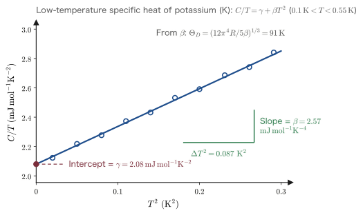

Chapter 15The Free-Electron Fermi Gas
In Chapters 13 and 14 we discussed how ions vibrate inside a crystal. From this chapter on, we turn to how electrons move inside that crystal. Why do metals conduct electricity, transport heat, and have a metallic luster? The first answer to these questions is given by the free-electron Fermi gas model of this chapter.
The assumptions of this model are almost disappointingly crude: “The valence electrons of a metal are particles that fly freely around in a box.” The periodic potential created by the ions is ignored. The Coulomb repulsion between electrons is also ignored. All that remains is the kinetic energy $\hbar^2k^2/2m$ and the Pauli exclusion principle. Yet this alone is enough to explain the specific heat, electrical conductivity, thermal conductivity, and Hall coefficient of metals to within an order of magnitude.
This is also a historically important chapter. The classical free electron model proposed by Drude in 1900 beautifully explained the electrical conductivity $\sigma=ne^2\tau/m$ and the Wiedemann–Franz law. At the same time, however, it carried a catastrophic failure in the electronic specific heat. According to classical statistics, $N$ free electrons should have a specific heat of $\frac32Nk_B$, yet the measured specific heat of a metal is hardly different from that of an insulator, merely $3Nk_B$ (Dulong–Petit). This contradiction—“electrons carry current but do not carry heat”—was the greatest mystery of solid-state physics for more than 25 years.
In 1928, Sommerfeld brought Fermi–Dirac statistics into the problem. The answer then emerged with surprising naturalness. By the Pauli principle, the electrons are packed without gaps up to $\epsilon_F$, and only a small fraction of them (about $0.5\%$ in a metal), those within a width of $k_BT$ of the Fermi level, can be excited thermally. The electronic specific heat is therefore suppressed to $T/T_F$ times the classical value, and moreover it is proportional to $T$. In this chapter we obtain this $C_{el}=\gamma T$ through a complete derivation of the Sommerfeld expansion, without skipping a single intermediate step.
Finally, we examine the limits of this model. The free electron model cannot explain why Si and Ge are semiconductors, nor why the Hall coefficient is positive for Al and Be. These two failures push us on to the energy bands of Chapter 16 and the Fermi surfaces of Chapter 18.
- The quantization $\epsilon_n=\frac{\hbar^2}{2m}\left(\frac{n\pi}{L}\right)^2$ in a one-dimensional box, and how the levels are filled according to the Pauli principle
- The quantization of $\kk$ by periodic boundary conditions, and the volume $(2\pi/L)^3$ occupied by one state in $\kk$ space (where the spin factor 2 enters)
- Derivation of $k_F=(3\pi^2n)^{1/3}$, $\epsilon_F=\frac{\hbar^2}{2m}(3\pi^2n)^{2/3}$, and $D(\epsilon)=\frac{3N}{2\epsilon_F}\sqrt{\epsilon/\epsilon_F}$
- Calculating $n,k_F,\epsilon_F,T_F,v_F$ for Na, Cu, and Al by hand, and getting a feel for the order of magnitude $T_F\sim10^5\,$K
- The statistical-mechanical derivation of the Fermi–Dirac distribution, and the distinction between the chemical potential $\mu$ and $\epsilon_F$
- A complete derivation of the Sommerfeld expansion (integration by parts → Taylor expansion → the moment integral $\int x^2\ee^x/(\ee^x+1)^2\dd x=\pi^2/3$)
- The electronic specific heat $C_{el}=\frac{\pi^2}{3}k_B^2TD(\epsilon_F)=\gamma T$, and why the answer fails to agree if the correction to $\mu(T)$ is forgotten
- The experimental method of separating $\gamma$ and the Debye $\beta$ in a plot of $C/T$ vs $T^2$, and the effective mass $m^*/m=\gamma_{\rm obs}/\gamma_{\rm free}$
- The Drude conductivity $\sigma=ne^2\tau/m$, the displacement of the Fermi sphere in $\kk$ space, the AC conductivity, and the plasma frequency
- Derivation of the Hall effect $R_H=-1/ne$, and the puzzle of metals that show a positive $R_H$
- The Wiedemann–Franz law $L=\frac{\pi^2}{3}(k_B/e)^2=2.44\times10^{-8}\,\mathrm{W\,\Omega\,K^{-2}}$
15.1 Electrons in a One-Dimensional Box
15.1.1 Setting up the model — what do we discard?
Definition: Free-electron gas
The free-electron gas is a model in which the valence electrons of a metal (one $3s^1$ electron for Na, one $4s^1$ electron for Cu, three $3s^23p^1$ electrons for Al) move in a box of volume $V$ without interacting with one another and without feeling any force from the ions.
The one-electron Hamiltonian consists of the kinetic energy only:
$$ \Ham = -\frac{\hbar^2}{2m}\nabla^2 $$When we want to emphasize that the electrons obey Fermi–Dirac statistics, we call it the free-electron Fermi gas.
Caution: Keep in mind what we have discarded
This model discards three things. When we later ask “why does it work?” and “where does it break down?”, we will always come back to this list.
- The periodic potential $U(\rr)=U(\rr+\TT)$ created by the ions. Including it opens energy gaps and makes it possible to distinguish metals from insulators (Chapter 16).
- The Coulomb repulsion between electrons. The distance between electrons in a metal is a few Å, so $e^2/4\pi\epsilon_0 r\sim$ a few eV, which is comparable to $\epsilon_F$. It is by no means small. The reason the electrons nevertheless behave like free electrons is given in Section 15.9 (Landau's Fermi-liquid theory).
- Collisions (scattering) with the ions. In Section 15.6 we bring this back as a phenomenological parameter, the relaxation time $\tau$. The model cannot predict the value of $\tau$ itself.
Judging from the magnitude of what has been discarded, it is not at all obvious why this model should work. Since it does work, however, we first put it to work—that is the attitude of this chapter.
15.1.2 The one-dimensional well potential
Instead of going straight to three dimensions, we first consider a single electron confined to a one-dimensional line segment of length $L$. Suppose there are infinitely high walls at both ends.
Derivation: Energy levels of a one-dimensional box
In the region $0<x<L$ the potential is zero, so the stationary-state Schrödinger equation is
$$ -\frac{\hbar^2}{2m}\frac{\dd^2\psi_n}{\dd x^2} = \epsilon_n \psi_n $$Here $\epsilon_n$ is the kinetic energy. If we put
$$ k_n^2 \equiv \frac{2m\epsilon_n}{\hbar^2} $$the equation takes the familiar form
$$ \frac{\dd^2\psi_n}{\dd x^2} = -k_n^2\psi_n $$The general solution is
$$ \psi_n(x) = A\sin(k_nx) + B\cos(k_nx) $$We now impose the boundary conditions. Because the walls are infinitely high, the wave function cannot leak out beyond them, so we must have $\psi_n(0)=\psi_n(L)=0$.
First, $x=0$: $\psi_n(0)=A\cdot0+B\cdot1=B=0$. Hence $B=0$; that is, the $\cos$ term drops out.
Next, $x=L$: $\psi_n(L)=A\sin(k_nL)=0$. If $A=0$, the wave function would vanish identically, which means that no electron exists; so we take $A\ne0$, and then
$$ \sin(k_nL)=0 \quad\Longrightarrow\quad k_nL = n\pi \quad (n=1,2,3,\dots) $$that is,
$$ k_n = \frac{n\pi}{L} $$(We exclude $n=0$ because it gives $\psi\equiv0$. For $n<0$, since $\sin$ is an odd function, we obtain the same state as for $n>0$ up to a sign, so it is not a new state—this fact becomes important when contrasted with the periodic boundary conditions of Section 15.2.)
Returning to $k_n^2=2m\epsilon_n/\hbar^2$ and solving for $\epsilon_n$, we obtain
∎ The levels spread apart in proportion to $n^2$. The normalization constant follows from $\int_0^L\abs{\psi_n}^2\dd x=1$ and is $A=\sqrt{2/L}$.
Physical Meaning: How the level spacing changes with $L$
Setting $n=1$ in Eq. \eqref{eq:15-1dlevels} gives $\epsilon_1=\hbar^2\pi^2/2mL^2$. Let us insert numbers.
| Box size $L$ | $\epsilon_1=\dfrac{\hbar^2\pi^2}{2mL^2}$ | Situation |
|---|---|---|
| $5\,\text{Å}$ (the size of one atom) | $2.41\times10^{-19}\,\mathrm{J}=1.50\,\mathrm{eV}$ | The scale of atoms and molecules. Quantization is clearly visible |
| $1\,\mathrm{cm}$ (the size of a sample) | $6.02\times10^{-34}\,\mathrm{J}=3.76\times10^{-15}\,\mathrm{eV}$ | The level spacing is effectively zero. The levels may be regarded as continuous |
For a sample of $1\,\mathrm{cm}$, the level spacing is only $10^{-13}$ times the thermal energy at room temperature, $k_BT=25.9\,\mathrm{meV}$. Therefore for a macroscopic sample we may regard the energy levels as continuous and replace sums by integrals. We justify and use this replacement in Section 15.2.
Conversely, if we shrink $L$ to about $\mathrm{nm}$, the level spacing exceeds $k_BT$. This is the physics of quantum dots and quantum wells.
15.1.3 Filling by the Pauli principle and the Fermi level
Suppose now that the box contains not one electron but $N$ electrons. Since we ignore the interactions, each electron occupies one of the levels of Eq. \eqref{eq:15-1dlevels}. How, then, are they filled in?
Definition: Orbitals and the Pauli exclusion principle
A solution of the Schrödinger equation for a single electron is called an orbital. Since an electron has the spin quantum number $m_s=\pm\frac12$, each orbital $n$ can hold at most two electrons (one with spin up and one with spin down).
This is the Pauli exclusion principle. It is the statement “a single quantum state can hold at most one fermion,” expressed separately in terms of orbital and spin.
Derivation: The Fermi energy in one dimension
In the ground state ($T=0$), the electrons fill the orbitals two at a time, starting from the lowest energy. When $N$ electrons ($N$ even) are put in, the levels from $n=1$ up to $n=n_F$ are filled. Here
$$ 2n_F = N \quad\Longrightarrow\quad n_F = \frac{N}{2} $$The energy of the highest occupied level is called the Fermi energy $\epsilon_F$. Substituting $n=n_F=N/2$ into Eq. \eqref{eq:15-1dlevels} gives
∎ In one dimension $\epsilon_F$ is proportional to the square of the linear density $N/L$. In three dimensions, as we will see in Section 15.2, it goes as $n^{2/3}$. The exponent depends on the dimension because the $d$ in “volume $\propto k^d$” in $k$ space changes.
Why is being “filled” so important?
In a classical gas, all the particles fall into the lowest-energy state $\epsilon=0$ at $T=0$. A Fermi gas does not. Because of the Pauli principle, even at $T=0$ the electrons are packed tightly from $\epsilon=0$ up to $\epsilon=\epsilon_F$, and the mean energy is not zero.
This single fact of being “filled” produces almost all the conclusions of this chapter.
- The specific heat is small (Section 15.5): an electron well below $\epsilon_F$ cannot be excited even if it receives energy $k_BT$, because there is no vacant state to go to. Only the electrons near the Fermi surface can move.
- The velocity is large (Section 15.2): even at $T=0$, an electron in the highest occupied level is moving at $v_F=\hbar k_F/m\sim10^6\,\mathrm{m/s}$. This is not thermal motion; it is motion forced by the Pauli principle.
- Electrons do not scatter from one another (Section 15.9): even if two electrons try to collide, the final states after scattering are almost all occupied. The phase space is squeezed down by a factor of $(k_BT/\epsilon_F)^2$.
15.2 Three Dimensions and Periodic Boundary Conditions — The Fermi Sphere
15.2.1 Why use periodic boundary conditions rather than fixed ends
As we move to three dimensions, we change the boundary condition. Instead of the fixed-end boundary condition ($\psi=0$) used in Section 15.1, we impose periodic boundary conditions (Born–von Kármán conditions):
$$ \psi(x+L,y,z)=\psi(x,y,z),\quad \psi(x,y+L,z)=\psi(x,y,z),\quad \psi(x,y,z+L)=\psi(x,y,z) $$Why? Three reasons why periodic boundary conditions are more convenient
- Traveling waves can be used. The solution $\sin(k_nx)$ of the fixed-end condition is a standing wave, containing equal right-going and left-going components. Therefore it carries no current. To discuss electrical conduction we need solutions in the form of traveling waves, $\ee^{\ii kx}$ (Section 15.6).
- Translational symmetry is preserved. Under periodic boundary conditions every part of the system is equivalent, and $\kk$ becomes a good quantum number. This has exactly the same structure as the way $\kk$ arose from the irreducible representations of the translation group in Chapter 11. Indeed, the free electron can be regarded as a “crystal in the limit of zero lattice constant.”
- Bulk properties do not depend on the boundary. The number of surface atoms is only $\sim N^{-1/3}$ of the total. For $N\sim10^{23}$ this is about $10^{-8}$. Therefore the choice of boundary condition does not affect bulk physical quantities. In fact, both $\epsilon_F$ and $D(\epsilon)$ give the same answer whichever boundary condition is used for the counting (we check the one-dimensional case in the Caution box of Section 15.2.2).
It is fine to picture this as “rolling up the sample and joining the $x$, $y$, and $z$ directions each to itself, making a hypercubic torus.” In Section 11.2 (Section 11.2.1) of Chapter 11 we drew a figure in which a one-dimensional chain is closed into a ring; this is its three-dimensional version.
15.2.2 Plane-wave solutions and quantization of $\kk$
Derivation: That $\psi_\kk=\ee^{\ii\kk\cdot\rr}$ is a solution, and the quantization of $\kk$
The Schrödinger equation for a three-dimensional free electron is
$$ -\frac{\hbar^2}{2m}\nabla^2\psi_\kk(\rr) = \epsilon_\kk\,\psi_\kk(\rr), \qquad \nabla^2 = \frac{\partial^2}{\partial x^2}+\frac{\partial^2}{\partial y^2}+\frac{\partial^2}{\partial z^2} $$As a trial, we substitute the plane wave
$$ \psi_\kk(\rr) = \frac{1}{\sqrt V}\ee^{\ii\kk\cdot\rr} = \frac{1}{\sqrt V}\ee^{\ii(k_xx+k_yy+k_zz)} $$The second derivative with respect to $x$ is
$$ \frac{\partial^2}{\partial x^2}\ee^{\ii k_xx} = (\ii k_x)^2\ee^{\ii k_xx} = -k_x^2\,\ee^{\ii k_xx} $$and the same holds for $y$ and $z$, so
$$ \nabla^2\psi_\kk = -(k_x^2+k_y^2+k_z^2)\psi_\kk = -k^2\psi_\kk $$Returning to the equation, we obtain
That is, the plane wave is indeed a solution, and its energy is determined only by $k=\abs{\kk}$. The constant-energy surface is a spherical surface in $\kk$ space. This is the origin of the Fermi sphere.
Next we impose the boundary condition. Periodicity in the $x$ direction requires
$$ \ee^{\ii k_x(x+L)} = \ee^{\ii k_xx} \quad\Longleftrightarrow\quad \ee^{\ii k_xL} = 1 $$Since $\ee^{\ii\theta}=1$ holds when $\theta$ is an integer multiple of $2\pi$,
$$ k_xL = 2\pi n_x \quad\Longrightarrow\quad k_x = \frac{2\pi n_x}{L},\qquad n_x = 0,\pm1,\pm2,\dots $$The same holds for $y$ and $z$. Collecting the three,
∎
Caution: $\pi/L$ or $2\pi/L$? — The difference from fixed ends
With the fixed-end condition of Section 15.1, $k_n=n\pi/L$ ($n=1,2,3,\dots$); with periodic boundary conditions, $k=2\pi n/L$ ($n=0,\pm1,\pm2,\dots$). The spacing has doubled, but negative $n$ are also counted as independent states, so the number of states per unit length is the same.
Let us check this in one dimension. The number of states in the range $-K<k<K$ is
- fixed ends: $k=n\pi/L$, $n=1,\dots,KL/\pi$, giving $KL/\pi$ states (only $k>0$)
- periodic: $k=2\pi n/L$, $n=-KL/2\pi,\dots,+KL/2\pi$, giving $KL/\pi$ states
They agree exactly. This is a concrete example of the earlier claim that the choice of boundary condition does not affect the counting in the bulk.
Physical Meaning: A plane wave is an eigenstate of momentum
Acting with the momentum operator $\hat\pp=-\ii\hbar\nabla$ on the plane wave gives
$$ \hat\pp\,\psi_\kk = -\ii\hbar\nabla\left(\frac{1}{\sqrt V}\ee^{\ii\kk\cdot\rr}\right) = -\ii\hbar\cdot\ii\kk\,\psi_\kk = \hbar\kk\,\psi_\kk $$so $\psi_\kk$ is a momentum eigenstate with eigenvalue $\hbar\kk$. Therefore
$$ \pp = \hbar\kk,\qquad \vv = \frac{\pp}{m} = \frac{\hbar\kk}{m} $$This is not so for the fixed-end $\sin(kx)$ ($\sin$ is a superposition of $\ee^{\ii kx}$ and $\ee^{-\ii kx}$, and is not a momentum eigenstate). This is the greatest benefit of choosing periodic boundary conditions.
Note, however: the equality $\hbar\kk=\pp$ holds only for free electrons. When there is a periodic potential, $\hbar\kk$ of a Bloch state is not the true momentum but the crystal momentum. We treat this in detail in Section 11.3 of Chapter 11 and in Chapter 17.
15.2.3 The volume occupied by one state in $\kk$ space
Derivation: The $\kk$-space volume per state, $(2\pi/L)^3$
What Eq. \eqref{eq:15-kquant} says is that the allowed $\kk$ form a simple cubic lattice in $\kk$ space with spacing $2\pi/L$ (Figure 15.1(b)).
The volume of the unit cell of this lattice is
where $V=L^3$. We read this as follows: each allowed $\kk$ point has the $\kk$-space volume $8\pi^3/V$ all to itself.
Therefore the number of allowed $\kk$ points in a region $\Omega$ of $\kk$ space is
$$ (\text{number of $\kk$ points}) = \frac{\Omega\text{ volume}}{8\pi^3/V} = \frac{V}{8\pi^3}\times(\Omega\text{ volume}) $$Equivalently, written as a rule for converting a sum over $\kk$ into an integral,
∎ The coefficient $V/(2\pi)^3$ is “the number of states per unit volume of $\kk$ space.” This is exactly the same rule as when we counted phonons in Chapter 14. The only difference between phonons and electrons is the spin factor described next.
Caution: The spin factor 2 enters here — the easiest point to get wrong
What Eq. \eqref{eq:15-sumtoint} counts is the number of orbitals ($\kk$ points), not the number of electrons. An electron can take two states, with spin $\pm\frac12$, so
$$ (\text{number of states available to electrons}) = 2\times(\kk\text{ points count}) $$There are two conventions for this factor 2:
- include it in the definition of the density of states $D(\epsilon)$ (the convention of this chapter; $D(\epsilon)$ is “the number of states available to electrons per unit energy”)
- leave it out, treating it as the density of orbitals, and multiply by 2 afterwards
Always check which one is used when reading the literature. In this chapter we always use $D(\epsilon)$ with the factor 2 included.
For phonons (Chapter 14) the factor was “the number of polarizations, 3.” Only the number of internal degrees of freedom of the particle differs; the skeleton of the counting is the same.
15.2.4 The Fermi sphere, $k_F$, and $\epsilon_F$
Derivation: $k_F=(3\pi^2n)^{1/3}$ and $\epsilon_F$
We construct the ground state at $T=0$. The energy \eqref{eq:15-dispersion} is an increasing function of $\abs{\kk}$ only, so filling in order of increasing energy means filling the $\kk$ points in order starting from those nearest the origin. When all $N$ electrons have been placed, the occupied region is a sphere centered at the origin. This is called the Fermi sphere, its radius the Fermi wavenumber $k_F$, and its spherical surface the Fermi surface.
The volume of the Fermi sphere is $\frac43\pi k_F^3$. By Eq. \eqref{eq:15-kvolume}, the number of $\kk$ points inside it is
$$ (\kk\text{ count}) = \frac{\dfrac43\pi k_F^3}{\dfrac{8\pi^3}{V}} = \frac43\pi k_F^3\cdot\frac{V}{8\pi^3} = \frac{V k_F^3}{6\pi^2} $$Here we multiply by the spin factor 2 to convert to the number of electrons:
$$ N = 2\times\frac{Vk_F^3}{6\pi^2} = \frac{Vk_F^3}{3\pi^2} $$Dividing both sides by $V$ and introducing the electron density $n\equiv N/V$, we obtain
$$ n = \frac{k_F^3}{3\pi^2} \quad\Longrightarrow\quad k_F^3 = 3\pi^2 n $$Taking the cube root of both sides,
Inserting this into the dispersion relation \eqref{eq:15-dispersion} gives the Fermi energy:
Together with this, we define the velocity of an electron on the Fermi surface (the Fermi velocity) and the Fermi temperature, which is $\epsilon_F$ converted into a temperature:
∎
Physical Meaning: $k_F$ is determined by the electron density alone
Looking at Eq. \eqref{eq:15-kF}, neither $\hbar$ nor $m$ appears in $k_F$. $k_F$ is a purely geometrical quantity; it is nothing more than the answer to a counting question: “when electrons are packed in with density $n$, what is the radius of the Fermi sphere?”
The mass $m$ enters only through $\epsilon_F$ and $v_F$. Therefore, when we later introduce the effective mass $m^*$ and replace $m\to m^*$, $k_F$ does not change and only $\epsilon_F,v_F$ do. This distinction will matter in Chapters 17 and 18.
One more point: $\lambda_F=2\pi/k_F$ is called the Fermi wavelength. For $k_F=1.36\,\text{Å}^{-1}$ (Cu), $\lambda_F\simeq4.6\,\text{Å}$, which is of the same order of magnitude as the lattice constant $a=3.615\,\text{Å}$. In an ordinary metal with about one carrier per unit cell, the Fermi surface is comparable in size to the first Brillouin zone, and this is exactly why the effect of the periodic potential (Bragg reflection) inevitably deforms the Fermi surface. This is the theme of Chapter 18. In systems with far fewer carriers per unit cell, such as semimetals and lightly doped semiconductors, by contrast, $k_F$ is smaller than $2\pi/a$ by orders of magnitude, and the Fermi surface is only a small pocket in a corner of the Brillouin zone.
15.2.5 The density of states $D(\epsilon)$
Derivation: Two ways to obtain $D(\epsilon)\propto\sqrt\epsilon$
Method 1: Construct $N(\epsilon)$ and differentiate. Let $N(\epsilon)$ be the total number of states with energy at most $\epsilon$. It suffices to reinterpret $k_F\to k=\sqrt{2m\epsilon}/\hbar$ in the derivation above:
$$ N(\epsilon) = \frac{V}{3\pi^2}k^3 = \frac{V}{3\pi^2}\left(\frac{\sqrt{2m\epsilon}}{\hbar}\right)^3 = \frac{V}{3\pi^2}\left(\frac{2m\epsilon}{\hbar^2}\right)^{3/2} = \frac{V}{3\pi^2}\left(\frac{2m}{\hbar^2}\right)^{3/2}\epsilon^{3/2} $$The density of states is the derivative of this with respect to $\epsilon$ (definition: $D(\epsilon)\dd\epsilon$ is the number of states between $\epsilon$ and $\epsilon+\dd\epsilon$). Using $\dfrac{\dd}{\dd\epsilon}\epsilon^{3/2}=\dfrac32\epsilon^{1/2}$,
$$ D(\epsilon) = \frac{\dd N}{\dd\epsilon} = \frac{V}{3\pi^2}\left(\frac{2m}{\hbar^2}\right)^{3/2}\cdot\frac32\epsilon^{1/2} $$Method 2: Use the logarithmic derivative (this one is faster). Taking the logarithm of both sides of $N(\epsilon)\propto\epsilon^{3/2}$ gives $\ln N = \frac32\ln\epsilon + \text{const}$. Differentiating with respect to $\epsilon$,
$$ \frac{1}{N}\frac{\dd N}{\dd\epsilon} = \frac{3}{2\epsilon} \quad\Longrightarrow\quad D(\epsilon) = \frac{\dd N}{\dd\epsilon} = \frac{3N(\epsilon)}{2\epsilon} $$In particular, at $\epsilon=\epsilon_F$ we have $N(\epsilon_F)=N$ (the total number of electrons), so
This form plays the leading role in the specific heat of Section 15.5. Furthermore, using $D\propto\sqrt\epsilon$, the value at any $\epsilon$ can be written in terms of the value at $\epsilon_F$:
∎ That Method 1 and Method 2 give the same result is immediately verified by substituting $N=\frac{V}{3\pi^2}(2m/\hbar^2)^{3/2}\epsilon_F^{3/2}$ into \eqref{eq:15-dosF}.
Math Note: The general form of the density of states, and why $\sqrt\epsilon$ is specific to free electrons
In general, the density of states is given by a surface integral over the constant-energy surface $S(\epsilon)$,
$$ D(\epsilon) = \frac{2}{(2\pi)^3}\int_{S(\epsilon)}\frac{\dd S}{\abs{\nabla_\kk\epsilon(\kk)}}\times V $$(the factor 2 is the spin). For free electrons, $\epsilon=\hbar^2k^2/2m$, $\abs{\nabla_\kk\epsilon}=\hbar^2k/m$, and $S=4\pi k^2$, so
$$ D(\epsilon) = \frac{2V}{8\pi^3}\cdot\frac{4\pi k^2}{\hbar^2k/m} = \frac{V m k}{\pi^2\hbar^2} = \frac{Vm}{\pi^2\hbar^2}\frac{\sqrt{2m\epsilon}}{\hbar} = \frac{V}{2\pi^2}\left(\frac{2m}{\hbar^2}\right)^{3/2}\sqrt\epsilon $$which agrees with Eq. \eqref{eq:15-dos}.
What matters here is that at points where $\abs{\nabla_\kk\epsilon}=0$ (band maxima, minima, and saddle points) the integrand diverges and a singularity appears in $D(\epsilon)$. This is the van Hove singularity, the same one we saw for phonons in Chapter 14. For free electrons, $\nabla_\kk\epsilon$ vanishes nowhere except at $\kk=0$, so $D(\epsilon)$ remains the smooth $\sqrt\epsilon$. The reason $D(\epsilon)$ of a real metal deviates strongly from $\sqrt\epsilon$ is that the band structure has van Hove singularities (Chapters 16 and 18).
It is also useful to keep in mind how the result depends on the dimension. We have $D(\epsilon)\propto\epsilon^{(d-2)/2}$, so that
- Three dimensions: $D\propto\sqrt\epsilon$ (zero at the band bottom)
- Two dimensions: $D=$ constant (rises like a step at the band bottom; a characteristic of semiconductor quantum wells; Exercise 15.1)
- One dimension: $D\propto1/\sqrt\epsilon$ (diverges at the band bottom; it appears in the optical absorption of carbon nanotubes)
15.2.6 Putting in numbers for real metals
Once we have a formula, we put in numbers. This is the most important part. The constants used below are
$$ \hbar = 1.0546\times10^{-34}\,\mathrm{J\,s},\quad m = 9.109\times10^{-31}\,\mathrm{kg},\quad k_B = 1.3806\times10^{-23}\,\mathrm{J/K},\quad 1\,\mathrm{eV}=1.6022\times10^{-19}\,\mathrm{J} $$Example 15.1: Finding $n,\,k_F,\,\epsilon_F,\,T_F,\,v_F$ of copper with a calculator
Cu is face-centered cubic (fcc) with lattice constant $a=3.615\,\text{Å}=3.615\times10^{-10}\,\mathrm{m}$. Its electron configuration is $[\mathrm{Ar}]3d^{10}4s^1$, so we take the valence electron to be the single $4s$ electron. Find all the quantities.
Solution.
(1) Electron density $n$. The conventional cell of fcc contains four atoms (Chapter 2). Since each atom has one valence electron, there are four electrons per unit cell.
$$ n = \frac{4}{a^3} = \frac{4}{(3.615\times10^{-10})^3} = \frac{4}{4.724\times10^{-29}\,\mathrm{m^3}} = 8.47\times10^{28}\,\mathrm{m^{-3}} $$(In units of $1\,\mathrm{cm^{-3}}$ this is $8.47\times10^{22}\,\mathrm{cm^{-3}}$. It is good to confirm that this is of the same order of magnitude as the atomic density.)
(2) $k_F$. Substitute into Eq. \eqref{eq:15-kF}. Since $3\pi^2=29.61$,
$$ k_F^3 = 3\pi^2 n = 29.61\times8.47\times10^{28} = 2.507\times10^{30}\,\mathrm{m^{-3}} $$ $$ k_F = (2.507\times10^{30})^{1/3} = (2.507)^{1/3}\times10^{10} = 1.359\times10^{10}\,\mathrm{m^{-1}} = 1.36\,\text{Å}^{-1} $$(The trick is to make the exponent a multiple of 3, so that the cube root of $10^{30}$ becomes $10^{10}$.)
(3) $\epsilon_F$. Substitute into Eq. \eqref{eq:15-eF}.
$$ \epsilon_F = \frac{\hbar^2k_F^2}{2m} = \frac{(1.0546\times10^{-34})^2\times(1.359\times10^{10})^2}{2\times9.109\times10^{-31}} $$The numerator is $1.1122\times10^{-68}\times1.846\times10^{20}=2.053\times10^{-48}$ and the denominator is $1.822\times10^{-30}$. Therefore
$$ \epsilon_F = \frac{2.053\times10^{-48}}{1.822\times10^{-30}} = 1.127\times10^{-18}\,\mathrm{J} = \frac{1.127\times10^{-18}}{1.6022\times10^{-19}}\,\mathrm{eV} = 7.03\,\mathrm{eV} $$(4) $T_F$.
$$ T_F = \frac{\epsilon_F}{k_B} = \frac{1.127\times10^{-18}}{1.3806\times10^{-23}} = 8.16\times10^{4}\,\mathrm{K} $$(5) $v_F$.
$$ v_F = \frac{\hbar k_F}{m} = \frac{1.0546\times10^{-34}\times1.359\times10^{10}}{9.109\times10^{-31}} = \frac{1.433\times10^{-24}}{9.109\times10^{-31}} = 1.57\times10^{6}\,\mathrm{m/s} $$This is $0.52\%$ of the speed of light. ∎
| Metal | Structure | Number of valence electrons $z$ | $a$ (Å) | $n$ ($10^{28}\,\mathrm{m^{-3}}$) | $k_F$ (Å$^{-1}$) | $\epsilon_F$ (eV) | $T_F$ ($10^4$ K) | $v_F$ ($10^6$ m/s) |
|---|---|---|---|---|---|---|---|---|
| Li | bcc | 1 | 3.491 | 4.70 | 1.12 | 4.75 | 5.51 | 1.29 |
| Na | bcc | 1 | 4.225 | 2.65 | 0.92 | 3.24 | 3.76 | 1.07 |
| K | bcc | 1 | 5.225 | 1.40 | 0.75 | 2.12 | 2.46 | 0.86 |
| Cu | fcc | 1 | 3.615 | 8.47 | 1.36 | 7.03 | 8.16 | 1.57 |
| Ag | fcc | 1 | 4.086 | 5.86 | 1.20 | 5.50 | 6.39 | 1.39 |
| Au | fcc | 1 | 4.078 | 5.90 | 1.20 | 5.53 | 6.41 | 1.39 |
| Al | fcc | 3 | 4.050 | 18.1 | 1.75 | 11.65 | 13.5 | 2.02 |
| Be | hcp | 2 | $a{=}2.29,c{=}3.58$ | 24.7 | 1.94 | 14.3 | 16.6 | 2.25 |
Physical Meaning: What $\epsilon_F\sim$ a few eV and $T_F\sim10^5\,$K mean
The following four points should be read from the numbers in Table 15.2.
(1) $T_F\gg T$—the electron gas is “extremely degenerate.” At room temperature, $T=300\,\mathrm{K}$,
$$ \frac{T}{T_F} = \frac{300}{8.16\times10^4} = 3.7\times10^{-3}\quad(\mathrm{Cu}) $$That is, for the electrons, room temperature is as good as absolute zero. Even when a metal is heated to its melting point ($1358\,\mathrm{K}$ for Cu), we still have only $T/T_F=0.017$. For the electron gas to behave classically ($T\gtrsim T_F$) would require $10^5\,\mathrm{K}$, and no metal exists at such a temperature.
This single point is the answer to “why do electrons contribute so little to the specific heat?” The 25-year puzzle is solved by this one number.
(2) $v_F$ is far larger than the thermal velocity. If the electrons were a classical ideal gas, their mean speed at room temperature would be
$$ v_{\rm th} = \sqrt{\frac{3k_BT}{m}} = \sqrt{\frac{3\times1.3806\times10^{-23}\times300}{9.109\times10^{-31}}} = \sqrt{1.364\times10^{10}} = 1.17\times10^{5}\,\mathrm{m/s} $$The value $v_F=1.57\times10^6\,\mathrm{m/s}$ is more than 13 times larger than this. Moreover, this velocity does not disappear even when the temperature is lowered to zero. It is a motion forced upon the electrons because the Pauli exclusion principle pushes them up to states of high $\kk$, and it is called degenerate motion (Fermi motion). Do not confuse it with the zero-point motion of a harmonic oscillator. The latter is a motion produced by the uncertainty relation, whereas the former is a motion produced by the exclusion principle. This is why, when we estimate the mean free path in Section 15.6, we must use $v_F$ rather than $v_{\rm th}$.
(3) $\epsilon_F$ is of the same order of magnitude as atomic energy scales. A few eV is the same order of magnitude as the binding energy of an atomic valence electron, the photon energy of visible light ($1.6$–$3.3\,\mathrm{eV}$), and the energy of a chemical bond. This is not a coincidence: it is because $n$ is of the same order of magnitude as the atomic density, and $k_F\sim\pi/a$.
(4) How the number of valence electrons $z$ matters. Since $\epsilon_F\propto n^{2/3}\propto z^{2/3}$, Al with $z=3$ has an $\epsilon_F$ that is $3^{2/3}=2.08$ times that of a metal with $z=1$. Indeed, the $11.7\,\mathrm{eV}$ of Al is 1.7 times the $7.0\,\mathrm{eV}$ of Cu (the difference in lattice constants also matters, so the ratio is not exactly $2.08$).
Example 15.2: Rearranging $\epsilon_F$ into a “form that a calculator can evaluate at once”
In actual estimates, we want to give $n$ in $\mathrm{cm^{-3}}$ and obtain $\epsilon_F$ in eV. Derive a convenient formula.
Solution. In Eq. \eqref{eq:15-eF}, write $n=x\times10^{22}\,\mathrm{cm^{-3}}=x\times10^{28}\,\mathrm{m^{-3}}$.
$$ \epsilon_F = \frac{\hbar^2}{2m}(3\pi^2)^{2/3}n^{2/3} $$We evaluate the coefficients numerically. $(3\pi^2)^{2/3}=29.61^{2/3}=9.570$ and $\dfrac{\hbar^2}{2m}=\dfrac{1.1122\times10^{-68}}{1.8219\times10^{-30}}=6.104\times10^{-39}\,\mathrm{J\,m^2}$. Also, $n^{2/3}=(x\times10^{28})^{2/3}=x^{2/3}\times10^{18.667}=4.642\,x^{2/3}\times10^{18}$. Therefore
$$ \epsilon_F = 6.104\times10^{-39}\times9.570\times4.642\,x^{2/3}\times10^{18} = 2.712\times10^{-19}\,x^{2/3}\ \mathrm{J} $$Converting to eV, we obtain
Check. For Cu, $n=8.47\times10^{22}\,\mathrm{cm^{-3}}$, so $x=8.47$, $x^{2/3}=4.153$, and $\epsilon_F=1.693\times4.153=7.03\,\mathrm{eV}$. This agrees with Table 15.2. ∎
In the discussion of semiconductors (Chapter 17) the carrier density is $10^{16}$–$10^{19}\,\mathrm{cm^{-3}}$, three to six orders of magnitude smaller, so this formula shows that $\epsilon_F$ is of the order of $\mathrm{meV}$. That is why in semiconductors $T_F\lesssim T$ holds and the Fermi–Dirac distribution can be approximated by the Boltzmann distribution (nondegenerate semiconductors). What separates metals from semiconductors is the single dimensionless quantity $T/T_F$.
15.3 The Fermi–Dirac Distribution
So far we have dealt only with $T=0$. We now move on to finite temperature.
15.3.1 Derivation of the distribution function
Derivation: Obtaining $f(\epsilon)$ from the grand partition function
Choose one orbital of energy $\epsilon$ and regard it as the “system,” and regard the remaining huge collection of electrons as a “heat bath plus particle bath.” The states the orbital can take are only the following two:
- No electron in it: particle number $0$, energy $0$
- One electron in it: particle number $1$, energy $\epsilon$
(the Pauli principle forbids two electrons). The weight of a system that may exchange particles is the Gibbs factor $\ee^{(N\mu-E)/k_BT}$, so the grand partition function is
$$ \Xi = \underbrace{\ee^{(0\cdot\mu-0)/k_BT}}_{\text{empty}} + \underbrace{\ee^{(\mu-\epsilon)/k_BT}}_{\text{one electron}} = 1 + \ee^{-(\epsilon-\mu)/k_BT} $$Here $\mu$ is the chemical potential. The mean occupation number of this orbital is
$$ f(\epsilon) = \langle N\rangle = \frac{0\cdot1 + 1\cdot\ee^{-(\epsilon-\mu)/k_BT}}{\Xi} = \frac{\ee^{-(\epsilon-\mu)/k_BT}}{1+\ee^{-(\epsilon-\mu)/k_BT}} $$Multiplying the numerator and the denominator by $\ee^{+(\epsilon-\mu)/k_BT}$ (this one step brings it into the familiar form) gives
∎ This is the Fermi–Dirac distribution function. $f(\epsilon)$ is “the probability that the orbital of energy $\epsilon$ is occupied by an electron,” and it satisfies $0\le f\le1$. The $+1$ in the denominator is the trace of the Pauli principle (for bosons it would be $-1$, and $f$ could exceed 1).
Physical Meaning: The five properties of $f(\epsilon)$
- At $\epsilon=\mu$, $f=1/2$ always. This is because $\ee^0+1=2$. It does not depend on temperature. This is the practical definition of $\mu$.
- As $T\to0$ it becomes a step function. If $\epsilon<\mu$, the exponent goes to $-\infty$ and $\ee^{-\infty}=0$, so $f\to1$. If $\epsilon>\mu$, the exponent goes to $+\infty$ and $\ee^{+\infty}=\infty$, so $f\to0$. That is, $f\to\theta(\mu-\epsilon)$, and we return to the Fermi-sphere picture of Section 15.2. In this limit $\mu(T=0)=\epsilon_F$.
- The high-energy tail is the Boltzmann distribution. If $\epsilon-\mu\gg k_BT$, then $\ee^{(\epsilon-\mu)/k_BT}\gg1$, so $f\simeq\ee^{-(\epsilon-\mu)/k_BT}$. We return to classical statistics. The conduction-band electrons of a semiconductor lie in this region (Chapter 17).
- Antisymmetric about $\mu$. $f(\mu+\delta)+f(\mu-\delta)=1$ holds exactly. Indeed, $\dfrac{1}{\ee^{x}+1}+\dfrac{1}{\ee^{-x}+1}=\dfrac{1}{\ee^x+1}+\dfrac{\ee^x}{1+\ee^x}=1$. This symmetry eliminates the odd-order terms in Section 15.4.
- The width of the transition region is about $4.4\,k_BT$. $f=0.9$ occurs when $\ee^x=1/9$, that is, $x=-\ln9=-2.20$, and $f=0.1$ occurs at $x=+\ln9=+2.20$. Therefore the width over which $f$ drops, $0.9\to0.1$, is $\Delta\epsilon=4.39\,k_BT$.
For Cu ($\epsilon_F=7.03\,\mathrm{eV}$) at room temperature, $k_BT=25.9\,\mathrm{meV}$, so the width of the transition region is $0.114\,\mathrm{eV}$. This is only $1.6\%$ of $\epsilon_F$. The Fermi surface remains almost sharp.
Caution: $\mu$ and $\epsilon_F$ are not the same
Some textbooks write $f(\epsilon)=1/(\ee^{(\epsilon-\epsilon_F)/k_BT}+1)$, call $\epsilon_F$ the “Fermi level,” and let it depend on temperature. Because this is a source of confusion, this chapter distinguishes them strictly as follows.
- $\epsilon_F$ = the energy of the highest occupied level at $T=0$. It is a constant independent of temperature. It is defined by Eq. \eqref{eq:15-eF}.
- $\mu(T)$ = the chemical potential. It is the quantity fixed at each temperature by conservation of the number of electrons, $N=\int_0^\infty D(\epsilon)f(\epsilon)\dd\epsilon$. $\mu(0)=\epsilon_F$.
As we show in Section 15.5, in a metal
$$ \mu(T) = \epsilon_F\left[1-\frac{\pi^2}{12}\left(\frac{T}{T_F}\right)^2\right] $$and for Cu at room temperature the correction is $\frac{\pi^2}{12}(3.7\times10^{-3})^2=1.1\times10^{-5}$; that is, $\mu$ is smaller than $\epsilon_F$ by only $0.0011\,\%$. Numerically it is almost negligible, but in the derivation of the specific heat it must never be neglected. If it is neglected, the coefficient of $C_{el}$ comes out wrong. The reason will become clear in Section 15.5.
In semiconductors this distinction becomes decisive. The $\mu$ of an intrinsic semiconductor lies near the middle of the gap, where there is not a single state. It is not the case that “electrons are at the Fermi level” (Chapter 17).
15.3.2 $-\partial f/\partial\epsilon$ — the “blade” of the Fermi surface
Derivation: The form of $-\partial f/\partial\epsilon$ and its three properties
What appears most often in later calculations is not $f$ itself but its derivative. Let $x\equiv(\epsilon-\mu)/k_BT$ and differentiate $f=1/(\ee^x+1)$ with respect to $\epsilon$. Using the chain rule ($\dd x/\dd\epsilon=1/k_BT$), we obtain
$$ \frac{\partial f}{\partial\epsilon} = \frac{\dd}{\dd x}\left(\frac{1}{\ee^x+1}\right)\cdot\frac{1}{k_BT} = -\frac{\ee^x}{(\ee^x+1)^2}\cdot\frac{1}{k_BT} $$Therefore
We verify three properties of this function.
(i) It is positive and has a sharp peak at $\epsilon=\mu$. At $x=0$, $\ee^0/(1+1)^2=1/4$, so the peak height is $1/(4k_BT)$. For $\abs{x}\gg1$, $\ee^{x}/(\ee^x+1)^2\simeq\ee^{-\abs{x}}$ is exponentially small. The peak width is $\sim k_BT$.
(ii) It is an even function of $x$. Replacing $x\to-x$ gives
$$ \frac{\ee^{-x}}{(\ee^{-x}+1)^2} = \frac{\ee^{-x}\cdot\ee^{2x}}{(\ee^{-x}\ee^{x}+\ee^{x})^2} = \frac{\ee^{x}}{(1+\ee^{x})^2} $$which is indeed the same as the original. This evenness eliminates the odd-order terms of the Sommerfeld expansion in Section 15.4.
(iii) Its total integral is 1.
$$ \int_{-\infty}^{\infty}\left(-\frac{\partial f}{\partial\epsilon}\right)\dd\epsilon = \left[-f(\epsilon)\right]_{-\infty}^{\infty} = -f(\infty)+f(-\infty) = -0+1 = 1 $$∎ Taken together, the three properties say that $-\partial f/\partial\epsilon$ is “a symmetric peak standing at $\epsilon=\mu$, of width $k_BT$ and area 1.” As $T\to0$ it converges to the Dirac delta function $\delta(\epsilon-\mu)$.
Physical Meaning: Only the neighborhood of the Fermi surface determines the physics
When we calculate the transport phenomena or the specific heat of a metal, the form $\displaystyle\int(\cdots)\left(-\frac{\partial f}{\partial\epsilon}\right)\dd\epsilon$ always appears. The fact that $-\partial f/\partial\epsilon$ is a sharp peak of width $k_BT$ means that
only the electrons within a range of $\pm$ a few $k_BT$ from $\epsilon_F$ determine the properties of the metal
For Cu, this is only a thin skin of $\pm0.05\,\mathrm{eV}$ out of $7.03\,\mathrm{eV}$. More than 99% of the electrons in a metal remain deeply buried and do nothing.
This fact is extremely powerful. For example, questions such as “why does the electrical resistance of a metal depend on temperature while the electron density $n$ does not?” and “why does a superconducting gap (of order meV), far smaller than $\epsilon_F$ (of order eV), nevertheless have a dramatic effect?” can all be seen through from this one sentence.
![The Fermi–Dirac distribution function, and the occupied-electron density obtained by multiplying the density of states by the distribution function. (a) The horizontal axis is ε (in units of the Fermi energy ε_F) and the vertical axis is the distribution function f; T_F = 50000 K is fixed, and T = 0 (crimson step), 1000 K (blue), 5000 K (green), and 10000 K (amber) are overlaid. As the temperature rises, f smears out smoothly around ε_F, passing through 0.5. (b) The gray dashed line is the density of states D(ε) ∝ √ε, and the blue solid line with light-blue fill is D(ε)f(ε) at T/T_F = 0.12. The amount vacated just below ε_F equals the amount filled just above it, so the area does not change.](figs/ch15_fig15-2.svg)
15.4 The Sommerfeld Expansion — A Complete Derivation
When we calculate the thermal properties of a metal, an integral of the form
$$ \int_{-\infty}^{\infty} H(\epsilon)\,f(\epsilon)\,\dd\epsilon $$always appears. Here $H(\epsilon)$ is $D(\epsilon)$ (when we find the number of electrons) or $\epsilon D(\epsilon)$ (when we find the total energy). Because $f$ is not a step function, this integral cannot in general be carried out analytically. For a metal, however, $k_BT\ll\mu$, and the integral can be expanded in powers of $k_BT/\mu$. This is the Sommerfeld expansion.
Theorem 15.1 (Sommerfeld expansion)
Let $H(\epsilon)$ be a smooth function that tends to zero sufficiently fast as $\epsilon\to-\infty$ and grows at most as a power as $\epsilon\to+\infty$. Then, under the condition $k_BT\ll\mu$,
holds. Here $H'$ and $H'''$ are the first and third derivatives at $\mu$. Derivatives of even order do not appear. The expansion proceeds in powers of $(k_BT/\mu)^2$.
15.4.1 Step 1: integration by parts
Derivation (Step 1): Producing $-\partial f/\partial\epsilon$
Define the antiderivative of $H$ by
$$ K(\epsilon) \equiv \int_{-\infty}^{\epsilon} H(\epsilon')\,\dd\epsilon' \qquad\text{that is}\qquad K'(\epsilon)=H(\epsilon),\quad K(-\infty)=0 $$Then the integral we want is
$$ I = \int_{-\infty}^{\infty} K'(\epsilon)f(\epsilon)\,\dd\epsilon $$Applying the formula for integration by parts, $\int u'v = [uv]-\int uv'$, with $u=K$ and $v=f$, we obtain
$$ I = \Big[K(\epsilon)f(\epsilon)\Big]_{-\infty}^{\infty} - \int_{-\infty}^{\infty}K(\epsilon)\frac{\partial f}{\partial\epsilon}\dd\epsilon $$We examine the boundary terms.
- $\epsilon\to+\infty$: $f(\epsilon)\to\ee^{-(\epsilon-\mu)/k_BT}\to0$ falls off exponentially. Since $K(\epsilon)$ grows at most as a power, the product is $0$.
- $\epsilon\to-\infty$: $K(-\infty)=0$ (by definition). $f$ is bounded ($\le1$). Hence the product is $0$.
Therefore the boundary terms vanish, and
∎ Thus, in place of the gently varying $f$, we now have $-\partial f/\partial\epsilon$, which stands sharply at $\epsilon=\mu$. This one move is the whole of the Sommerfeld expansion. All that remains is to use the principle that “a smooth function multiplying a sharp peak may be expanded about the position of the peak.”
15.4.2 Step 2: Taylor expansion and the moment integrals
Derivation (Step 2): Taylor-expanding $K$ about $\mu$
$-\partial f/\partial\epsilon$ takes appreciable values only within a width $\sim k_BT$ of $\epsilon=\mu$. Within that narrow range we may Taylor-expand $K(\epsilon)$ about $\mu$:
$$ K(\epsilon) = \sum_{n=0}^{\infty}\frac{K^{(n)}(\mu)}{n!}(\epsilon-\mu)^n = K(\mu) + K'(\mu)(\epsilon-\mu) + \frac{K''(\mu)}{2!}(\epsilon-\mu)^2 + \frac{K'''(\mu)}{3!}(\epsilon-\mu)^3+\cdots $$Substituting this into \eqref{eq:15-sommer1}, we change variables to the dimensionless variable
$$ x \equiv \frac{\epsilon-\mu}{k_BT} \qquad\Longrightarrow\qquad \epsilon-\mu = k_BT\,x,\quad \dd\epsilon = k_BT\,\dd x $$By Eq. \eqref{eq:15-mdfde}, $-\partial f/\partial\epsilon=\dfrac{1}{k_BT}\dfrac{\ee^x}{(\ee^x+1)^2}$, so it cancels exactly against the $k_BT$ in $\dd\epsilon$, and
$$ I = \sum_{n=0}^{\infty}\frac{K^{(n)}(\mu)}{n!}(k_BT)^n \underbrace{\int_{-\infty}^{\infty}x^n\frac{\ee^{x}}{(\ee^{x}+1)^2}\dd x}_{\displaystyle \equiv A_n} $$On extending the lower limit of the integral to $-\infty$: strictly, the lower limit of $\epsilon$ is $0$ (the bottom of the density of states), so the lower limit of $x$ is $-\mu/k_BT$. The integrand there, however, is of the order of $\ee^{-\mu/k_BT}=\ee^{-T_F/T}$, which for Cu at room temperature is $\ee^{-272}\approx10^{-118}$. The error incurred by extending the limit to $-\infty$ is smaller than any order of the expansion and can be neglected completely. Kittel does not mention this point, but it is the basis for the fact that the expansion is “an asymptotic expansion rather than a power series,” so it is worth keeping in mind.
What remains is to find the moments $A_n$.
(i) For odd $n$, $A_n=0$. As we saw in property (ii) in Section 15.3.2, $\ee^x/(\ee^x+1)^2$ is an even function of $x$. Then $x^{\rm odd}\times(\text{even function})$ is an odd function, and its integral over a symmetric interval is zero.
(ii) $A_0=1$. This is exactly property (iii) in Section 15.3.2:
$$ A_0 = \int_{-\infty}^{\infty}\frac{\ee^x}{(\ee^x+1)^2}\dd x = \left[-\frac{1}{\ee^x+1}\right]_{-\infty}^{\infty} = -0-(-1) = 1 $$(iii) $A_2=\pi^2/3$ and $A_4=7\pi^4/15$. We derive these in the next subsection.
Substituting these, only the terms $n=0,2,4,\dots$ survive:
$$ I = K(\mu)\cdot1 + \frac{K''(\mu)}{2!}(k_BT)^2\cdot\frac{\pi^2}{3} + \frac{K''''(\mu)}{4!}(k_BT)^4\cdot\frac{7\pi^4}{15}+\cdots $$We tidy up the coefficients: $\dfrac{1}{2!}\cdot\dfrac{\pi^2}{3}=\dfrac{\pi^2}{6}$ and $\dfrac{1}{4!}\cdot\dfrac{7\pi^4}{15}=\dfrac{7\pi^4}{360}$. Finally, since $K'=H$, we have $K''=H'$ and $K''''=H'''$, and writing $K(\mu)=\int_{-\infty}^{\mu}H\dd\epsilon$, we obtain
$$ I = \int_{-\infty}^{\mu}H(\epsilon)\dd\epsilon + \frac{\pi^2}{6}(k_BT)^2H'(\mu)+\frac{7\pi^4}{360}(k_BT)^4H'''(\mu)+\cdots $$∎ Theorem 15.1 has been obtained.
15.4.3 Derivation of the moment integral $A_2=\pi^2/3$
This is the most technical part of this section. Kittel dismisses this integral in one line with “as is well known,” but in fact it is a beautiful calculation that passes through the alternating series $\sum(-1)^{n-1}/n^2$. We follow it step by step.
Derivation: $\displaystyle\int_{-\infty}^{\infty}\frac{x^2\ee^x}{(\ee^x+1)^2}\dd x=\frac{\pi^2}{3}$
Step 1: Halve the range. The integrand is an even function (both $x^2$ and $\ee^x/(\ee^x+1)^2$ are even), so
$$ A_2 = 2\int_{0}^{\infty}\frac{x^2\ee^x}{(\ee^x+1)^2}\dd x $$Step 2: Express in terms of $\ee^{-x}$. Dividing the numerator and the denominator by $\ee^{2x}$ gives
$$ \frac{\ee^x}{(\ee^x+1)^2} = \frac{\ee^{-x}}{(1+\ee^{-x})^2} $$For $x>0$ we have $0<\ee^{-x}<1$, so the following expansion can be used.
Step 3: Expand $(1+u)^{-2}$. Differentiating both sides of the geometric series $\dfrac{1}{1+u}=\sum_{n=0}^{\infty}(-1)^nu^n$ ($\abs u<1$) with respect to $u$, we obtain
$$ -\frac{1}{(1+u)^2} = \sum_{n=1}^{\infty}(-1)^n n\,u^{n-1} \quad\Longrightarrow\quad \frac{1}{(1+u)^2} = \sum_{n=1}^{\infty}(-1)^{n-1}n\,u^{n-1} = \sum_{m=0}^{\infty}(-1)^{m}(m+1)u^{m} $$Now let $u=\ee^{-x}$:
$$ \frac{\ee^{-x}}{(1+\ee^{-x})^2} = \ee^{-x}\sum_{m=0}^{\infty}(-1)^m(m+1)\ee^{-mx} = \sum_{m=0}^{\infty}(-1)^m(m+1)\ee^{-(m+1)x} $$Relabeling the index by $m+1\to\ell$,
$$ \frac{\ee^{-x}}{(1+\ee^{-x})^2} = \sum_{\ell=1}^{\infty}(-1)^{\ell-1}\,\ell\,\ee^{-\ell x} $$Step 4: Integrate term by term. Using the formula $\displaystyle\int_0^\infty x^2\ee^{-\ell x}\dd x=\frac{2}{\ell^3}$ (integration by parts twice, or $\int_0^\infty x^{p}\ee^{-\ell x}\dd x=p!/\ell^{p+1}$), we obtain
$$ \int_0^\infty\frac{x^2\ee^{-x}}{(1+\ee^{-x})^2}\dd x = \sum_{\ell=1}^{\infty}(-1)^{\ell-1}\ell\cdot\frac{2}{\ell^3} = 2\sum_{\ell=1}^{\infty}\frac{(-1)^{\ell-1}}{\ell^{2}} $$The cancellation of one factor of $\ell$, which leaves $1/\ell^2$, is the key to this calculation.
Step 5: The value of the alternating series. By the lemma in the next subsection,
$$ \sum_{\ell=1}^{\infty}\frac{(-1)^{\ell-1}}{\ell^2} = 1-\frac14+\frac19-\frac1{16}+\cdots = \frac{\pi^2}{12} $$Therefore
$$ A_2 = 2\times2\times\frac{\pi^2}{12} = \frac{\pi^2}{3} $$∎
Math Note: Proof of $\sum(-1)^{\ell-1}/\ell^2=\pi^2/12$ (from the Fourier series)
Fourier-expand $f(x)=x^2$ on the interval $[-\pi,\pi]$. Since it is an even function, no $\sin$ terms appear, and
$$ x^2 = \frac{a_0}{2}+\sum_{n=1}^{\infty}a_n\cos(nx) $$Constant term.
$$ \frac{a_0}{2} = \frac{1}{2\pi}\int_{-\pi}^{\pi}x^2\dd x = \frac{1}{2\pi}\cdot\frac{2\pi^3}{3} = \frac{\pi^2}{3} $$Coefficient $a_n$. $a_n=\dfrac1\pi\displaystyle\int_{-\pi}^{\pi}x^2\cos(nx)\dd x=\dfrac2\pi\int_0^\pi x^2\cos(nx)\dd x$. We integrate by parts twice.
$$ \int_0^\pi x^2\cos(nx)\dd x = \left[\frac{x^2\sin nx}{n}\right]_0^\pi - \frac{2}{n}\int_0^\pi x\sin(nx)\dd x = 0 - \frac{2}{n}\int_0^\pi x\sin(nx)\dd x $$(since $\sin n\pi=0$). Furthermore,
$$ \int_0^\pi x\sin(nx)\dd x = \left[-\frac{x\cos nx}{n}\right]_0^\pi + \frac{1}{n}\int_0^\pi\cos(nx)\dd x = -\frac{\pi\cos n\pi}{n} + 0 = -\frac{\pi(-1)^n}{n} $$Hence
$$ \int_0^\pi x^2\cos(nx)\dd x = -\frac{2}{n}\cdot\left(-\frac{\pi(-1)^n}{n}\right) = \frac{2\pi(-1)^n}{n^2} \quad\Longrightarrow\quad a_n = \frac{2}{\pi}\cdot\frac{2\pi(-1)^n}{n^2} = \frac{4(-1)^n}{n^2} $$Therefore
$$ x^2 = \frac{\pi^2}{3} + 4\sum_{n=1}^{\infty}\frac{(-1)^n}{n^2}\cos(nx) $$Substitute $x=0$. Since $\cos0=1$,
$$ 0 = \frac{\pi^2}{3}+4\sum_{n=1}^{\infty}\frac{(-1)^n}{n^2} \quad\Longrightarrow\quad \sum_{n=1}^{\infty}\frac{(-1)^n}{n^2} = -\frac{\pi^2}{12} \quad\Longrightarrow\quad \sum_{n=1}^{\infty}\frac{(-1)^{n-1}}{n^2} = \frac{\pi^2}{12} $$∎ Incidentally, substituting $x=\pi$ and using $\cos n\pi=(-1)^n$, we get $(-1)^n\cdot(-1)^n=1$, so
$$ \pi^2 = \frac{\pi^2}{3}+4\sum_{n=1}^\infty\frac{1}{n^2} \quad\Longrightarrow\quad \sum_{n=1}^{\infty}\frac{1}{n^2} = \frac{\pi^2}{6} $$That is, the Basel problem $\zeta(2)=\pi^2/6$ is obtained at the same time. The two are related as follows:
$$ \sum\frac{(-1)^{n-1}}{n^2} = \sum\frac{1}{n^2}-2\sum_{n\,\text{even}}\frac{1}{n^2} = \zeta(2)-2\sum_{m=1}^\infty\frac{1}{(2m)^2} = \zeta(2)-\frac{2}{4}\zeta(2) = \frac{\zeta(2)}{2} = \frac{\pi^2}{12} $$This is the relation that ties the two together. The $\pi^2/6$ of the Basel problem lives inside the coefficient $\pi^2/3$ of the electronic specific heat of a metal.
Example 15.3: Finding the fourth moment $A_4=7\pi^4/15$
Following the same procedure as above, calculate $A_4=\displaystyle\int_{-\infty}^{\infty}\frac{x^4\ee^x}{(\ee^x+1)^2}\dd x$. You may use $\zeta(4)=\pi^4/90$.
Solution. By evenness, $A_4=2\int_0^\infty x^4\ee^{-x}(1+\ee^{-x})^{-2}\dd x$. Using the expansion of Step 3 as it stands, together with $\displaystyle\int_0^\infty x^4\ee^{-\ell x}\dd x=\frac{4!}{\ell^5}=\frac{24}{\ell^5}$, we obtain
$$ A_4 = 2\sum_{\ell=1}^\infty(-1)^{\ell-1}\ell\cdot\frac{24}{\ell^5} = 48\sum_{\ell=1}^\infty\frac{(-1)^{\ell-1}}{\ell^4} $$We express the alternating series in terms of $\zeta(4)$. By the same calculation as above,
$$ \sum\frac{(-1)^{\ell-1}}{\ell^4} = \zeta(4)-2\sum_{m}\frac{1}{(2m)^4} = \zeta(4)-\frac{2}{16}\zeta(4) = \frac78\zeta(4) = \frac78\cdot\frac{\pi^4}{90} = \frac{7\pi^4}{720} $$Therefore
$$ A_4 = 48\times\frac{7\pi^4}{720} = \frac{7\pi^4}{15} $$∎ The fourth-order coefficient of Theorem 15.1 is $\dfrac{A_4}{4!}=\dfrac{7\pi^4}{15\cdot24}=\dfrac{7\pi^4}{360}$. In general,
$$ A_{2n} = 2(2n)!\left(1-2^{1-2n}\right)\zeta(2n) $$can be written.
Why does the expansion start at $(k_BT)^2$? — The structure of the expansion
The main conclusion of the Sommerfeld expansion can be stated in a single sentence:
the effect of finite temperature appears as a correction of order $(k_BT/\mu)^2$ to the simple integral up to $\mu$, and there is no first-order term.
The reason there is no first-order term is that $-\partial f/\partial\epsilon$ is symmetric about $\mu$ (property (ii) in Section 15.3.2). Physically, the electrons that “left from just below $\mu$” and the electrons that “entered just above $\mu$” are mirror images of each other about $\mu$, so their first-order effects cancel.
This absence of a first-order term determines all the characteristic temperature dependences of metals, such as the electronic specific heat being $C\propto T$ (rather than $T^0$) and the Pauli paramagnetism being independent of temperature. The expansion parameter is
$$ \left(\frac{k_BT}{\epsilon_F}\right)^2 = \left(\frac{T}{T_F}\right)^2 $$which for Cu at room temperature is $(3.7\times10^{-3})^2=1.4\times10^{-5}$. Even the second-order term is this small, so there is in practice almost no point in writing out the fourth and higher orders. Even so, knowing the form of the fourth-order term is useful when we discuss the $T^3$ correction to the specific heat ($\gamma T+\text{(electronic) }T^3$).
15.5 The Electronic Specific Heat $C_{el}=\gamma T$
15.5.1 Breakdown of the classical theory
A 25-year mystery — Why don't electrons absorb heat?
According to the equipartition theorem of classical statistical mechanics, $N$ freely moving particles each carry an energy of $\frac12k_BT$ for each of the three degrees of freedom of motion, so that
$$ U_{\rm class} = \frac32Nk_BT,\qquad C_{\rm class} = \frac32Nk_B $$should hold. In a metal this adds to the lattice-vibration contribution $3Nk_B$ (Dulong–Petit, Chapter 14), so the specific heat should be $4.5Nk_B$.
The measurements, however, say otherwise. The specific heat of a metal at room temperature is almost the same as that of an insulator, $3Nk_B$, and the electronic contribution amounts to at most $1\%$. “The electrons move around freely enough to carry an electric current, yet they absorb no heat at all.” This contradiction remained unresolved from Drude in 1900 until Sommerfeld in 1928.
The answer already appears in the numbers of Section 15.2: $T/T_F\sim0.004$. Most electrons cannot be excited thermally. Even if an electron lying deeper than $k_BT$ below $\epsilon_F$ tries to receive an energy of $k_BT$, all the orbitals it could go to are already filled. The Pauli principle forbids it. Only the electrons in a thin skin of thickness $\sim k_BT$ at the Fermi surface can move.
Physical Meaning: Estimating only the order of magnitude of $C_{el}$ first
Before entering the exact calculation, let us guess the form of the answer by intuition.
- Number of electrons that can be excited thermally: the electrons within $\pm k_BT$ of the Fermi surface. Their number is $\Delta N\simeq D(\epsilon_F)\cdot k_BT$. Using Eq. \eqref{eq:15-dosF}, $\Delta N\simeq\dfrac{3N}{2\epsilon_F}k_BT=\dfrac32 N\dfrac{T}{T_F}$.
- Energy received per electron: $\sim k_BT$.
- Hence the increase in thermal energy: $\Delta U\simeq\Delta N\cdot k_BT\simeq\dfrac32Nk_B\dfrac{T^2}{T_F}$.
- Specific heat: $C_{el}=\dfrac{\dd(\Delta U)}{\dd T}\simeq3Nk_B\dfrac{T}{T_F}$.
The exact answer (Section 15.5.3) is $C_{el}=\dfrac{\pi^2}{2}Nk_B\dfrac{T}{T_F}=4.93\,Nk_B\dfrac{T}{T_F}$, which is of the same order of magnitude as this estimate.
There are two key points. (1) It is smaller than the classical value $\frac32Nk_B$ by a factor of $\sim T/T_F$, and (2) it is proportional to $T$ (not a constant). For Cu at room temperature,
$$ \frac{C_{el}}{3Nk_B} = \frac{\pi^2}{6}\frac{T}{T_F} = \frac{9.87}{6}\times3.68\times10^{-3} = 6.0\times10^{-3} $$which is $0.6\%$ of the lattice contribution. The experimental fact that “electrons do not absorb heat” is thus reproduced here.
Moreover, the proportionality to $T$ in (2) is decisive experimentally. The lattice specific heat falls off as $T^3$ at low temperatures (Debye, Chapter 14), so as $T\to0$ the term $\gamma T$ always wins. Below a few K the electronic specific heat becomes the dominant one.
15.5.2 Finding $\mu(T)$ — a correction that must not be forgotten
Derivation: $\mu(T)=\epsilon_F\left[1-\frac{\pi^2}{12}(T/T_F)^2\right]$
The number of electrons is independent of temperature. This is the condition that determines $\mu(T)$:
$$ N = \int_0^{\infty}D(\epsilon)f(\epsilon)\,\dd\epsilon $$We apply the Sommerfeld expansion \eqref{eq:15-sommerfeld} with $H(\epsilon)=D(\epsilon)$ (since $D=0$ for $\epsilon<0$, the lower limit may be taken to be $-\infty$):
$$ N = \int_{0}^{\mu}D(\epsilon)\dd\epsilon + \frac{\pi^2}{6}(k_BT)^2D'(\mu)+O(T^4) $$On the other hand, at $T=0$ the function $f$ is a step, so
$$ N = \int_0^{\epsilon_F}D(\epsilon)\dd\epsilon $$The right-hand sides of these two equations are equal. Taking the difference gives
$$ 0 = \int_{\epsilon_F}^{\mu}D(\epsilon)\dd\epsilon + \frac{\pi^2}{6}(k_BT)^2D'(\mu) $$Since the difference between $\mu$ and $\epsilon_F$ is small, we approximate the first term by $D(\epsilon_F)\times(\mu-\epsilon_F)$ and replace $D'(\mu)$ in the second term by $D'(\epsilon_F)$ (both introduce errors of $O(T^4)$):
$$ D(\epsilon_F)(\mu-\epsilon_F) + \frac{\pi^2}{6}(k_BT)^2D'(\epsilon_F) = 0 $$ $$ \mu - \epsilon_F = -\frac{\pi^2}{6}(k_BT)^2\frac{D'(\epsilon_F)}{D(\epsilon_F)} $$Here we use $D\propto\epsilon^{1/2}$ for free electrons. Since $D'=\frac12 C\epsilon^{-1/2}$ and $D=C\epsilon^{1/2}$,
$$ \frac{D'(\epsilon_F)}{D(\epsilon_F)} = \frac{1}{2\epsilon_F} $$(It is convenient to remember this as the logarithmic derivative $\dfrac{\dd\ln D}{\dd\epsilon}=\dfrac{1}{2\epsilon}$.) Substituting, we obtain
$$ \mu = \epsilon_F - \frac{\pi^2}{12}\frac{(k_BT)^2}{\epsilon_F} $$Using $k_BT/\epsilon_F=T/T_F$ to tidy up, we find
∎
Why does $\mu$ decrease?
Let us see the reason for the sign in Figure 15.2(b). When $T$ is raised, electrons just below $\mu$ move to just above $\mu$. If $D(\epsilon)$ were constant, the number of states available above and below $\mu$ would be equal, so $\mu$ would not need to move.
The free-electron $D(\epsilon)\propto\sqrt\epsilon$, however, increases with $\epsilon$. That is, there are more vacant seats above $\mu$. If $\mu$ were left as it is, more electrons would escape upward and the number of electrons would not be conserved. To compensate, $\mu$ must be lowered slightly so as to reduce the number of openings on the upper side.
Hence the sign is such that $\mu$ decreases if $D'>0$ and increases if $D'<0$. The general formula
$$ \mu(T)=\epsilon_F-\frac{\pi^2}{6}(k_BT)^2\frac{D'(\epsilon_F)}{D(\epsilon_F)} $$expresses this intuition directly. If $D(\epsilon)$ changes sharply near $\epsilon_F$ in a real metal (such as the $d$ band of a transition metal), the temperature change of $\mu$ can be much larger than the free-electron prediction.
15.5.3 Total energy and specific heat
Derivation: $C_{el}=\frac{\pi^2}{3}k_B^2TD(\epsilon_F)$ — the $\mu$ term cancels miraculously
The total energy of the electron system is
$$ U(T) = \int_0^\infty \epsilon\,D(\epsilon)f(\epsilon)\,\dd\epsilon $$We apply the Sommerfeld expansion with $H(\epsilon)=\epsilon D(\epsilon)$. Noting that $H'(\epsilon)=\dfrac{\dd}{\dd\epsilon}[\epsilon D(\epsilon)]=D(\epsilon)+\epsilon D'(\epsilon)$, we obtain
$$ U = \int_0^{\mu}\epsilon D(\epsilon)\dd\epsilon + \frac{\pi^2}{6}(k_BT)^2\Big[D(\mu)+\mu D'(\mu)\Big] + O(T^4) $$Rewrite the first term as an integral up to $\epsilon_F$. Since the difference between $\mu$ and $\epsilon_F$ is small,
$$ \int_0^{\mu}\epsilon D\dd\epsilon = \int_0^{\epsilon_F}\epsilon D\dd\epsilon + \int_{\epsilon_F}^{\mu}\epsilon D\dd\epsilon \simeq \underbrace{\int_0^{\epsilon_F}\epsilon D\dd\epsilon}_{\displaystyle \equiv U_0} + \epsilon_F D(\epsilon_F)\,(\mu-\epsilon_F) $$Here $U_0$ is the total energy at $T=0$ (a constant). For $\mu-\epsilon_F$ we substitute, as it stands, the relation obtained in the derivation of Eq. \eqref{eq:15-mu}:
$$ D(\epsilon_F)(\mu-\epsilon_F) = -\frac{\pi^2}{6}(k_BT)^2D'(\epsilon_F) $$Therefore
$$ \int_0^{\mu}\epsilon D\dd\epsilon \simeq U_0 - \frac{\pi^2}{6}(k_BT)^2\,\epsilon_FD'(\epsilon_F) $$The second term is also evaluated at $\epsilon_F$ (the error from replacing $\mu\to\epsilon_F$ is $O(T^4)$):
$$ \frac{\pi^2}{6}(k_BT)^2\Big[D(\epsilon_F)+\epsilon_FD'(\epsilon_F)\Big] $$Add the two.
$$ U = U_0 \underbrace{- \frac{\pi^2}{6}(k_BT)^2\epsilon_FD'(\epsilon_F)}_{\text{from the shift of $\mu$}} + \frac{\pi^2}{6}(k_BT)^2D(\epsilon_F) \underbrace{+ \frac{\pi^2}{6}(k_BT)^2\epsilon_FD'(\epsilon_F)}_{\text{from the second-order term of the Sommerfeld expansion}} $$The two terms containing $\epsilon_FD'(\epsilon_F)$ cancel each other completely. What remains is
The specific heat is $C_{el}=\partial U/\partial T$. Differentiating $(k_BT)^2=k_B^2T^2$ with respect to $T$ gives $2k_B^2T$, so
∎ This equation is not limited to the free electron model. All that was used in the derivation is that “$T\ll T_F$, so that the Sommerfeld expansion can be used”; the specific form of $D(\epsilon)$ was not used. Therefore, however complicated the band structure may be, $C_{el}$ is determined as soon as $D(\epsilon_F)$ is known. This is why measuring $\gamma$ experimentally is equivalent to “measuring the density of states at the Fermi level.”
Caution: What happens if the correction to $\mu(T)$ is forgotten
In the derivation above, if we had fixed $\mu=\epsilon_F$ (that is, dropped the term from the shift of $\mu$), we would obtain
$$ U^{\rm wrong} = U_0 + \frac{\pi^2}{6}(k_BT)^2\big[D(\epsilon_F)+\epsilon_FD'(\epsilon_F)\big] $$For free electrons, $\epsilon_FD'(\epsilon_F)=\epsilon_F\cdot\frac{D(\epsilon_F)}{2\epsilon_F}=\frac12D(\epsilon_F)$, so
$$ U^{\rm wrong} = U_0+\frac{\pi^2}{6}(k_BT)^2\cdot\frac32D(\epsilon_F) $$that is, the specific heat is overestimated by a factor of $3/2$. Since $\gamma$ is wrong by $50\%$, the estimate of the effective mass is fatally off.
This pitfall arises easily because Kittel's account (around Eq. (6.23)) writes that “$\mu\simeq\epsilon_F$ is allowed,” while in the actual calculation the shift of $\mu$ is taken into account separately. $\mu\simeq\epsilon_F$ means that the two are “close as numerical values”; it does not mean that “$(\mu-\epsilon_F)\times D(\epsilon_F)$ may be neglected.” This product is of order $(k_BT)^2$, exactly the same size as the term we want to keep.
Derivation: $\gamma$ for free electrons
Substitute the free-electron $D(\epsilon_F)=3N/2\epsilon_F$ (Eq. \eqref{eq:15-dosF}) into Eq. \eqref{eq:15-Cel}:
$$ C_{el} = \frac{\pi^2}{3}k_B^2T\cdot\frac{3N}{2\epsilon_F} = \frac{\pi^2}{2}Nk_B\frac{k_BT}{\epsilon_F} $$∎ Compared with the classical value $\frac32Nk_B$,
$$ \frac{C_{el}}{C_{\rm class}} = \frac{(\pi^2/2)Nk_B(T/T_F)}{(3/2)Nk_B} = \frac{\pi^2}{3}\frac{T}{T_F} = 3.29\,\frac{T}{T_F} $$This confirms that the intuitive estimate of Section 15.5.1 was correct.
Example 15.4: Calculating $\gamma$ of copper per mole
Find $\gamma$ for 1 mole of Cu ($N=N_A=6.022\times10^{23}$; since there is one valence electron per atom, there is also 1 mole of electrons). Take $T_F=8.16\times10^4\,\mathrm{K}$.
Solution. In Eq. \eqref{eq:15-gamma}, set $Nk_B=N_Ak_B=R=8.314\,\mathrm{J/(mol\,K)}$.
$$ \gamma = \frac{\pi^2}{2}\cdot\frac{R}{T_F} = \frac{9.8696}{2}\times\frac{8.314}{8.16\times10^4} = 4.9348\times1.0189\times10^{-4} = 5.03\times10^{-4}\,\mathrm{J/(mol\,K^2)} $$That is,
$$ \gamma_{\rm free}(\mathrm{Cu}) = 0.503\,\mathrm{mJ\,mol^{-1}K^{-2}} $$The measured value is $0.695\,\mathrm{mJ\,mol^{-1}K^{-2}}$ (Table 15.3), and the ratio is $1.38$. ∎
As a check, let us also get a feel for the absolute value. At $T=1\,\mathrm{K}$, $C_{el}=0.503\,\mathrm{mJ/(mol\,K)}$. The lattice specific heat at the same temperature is $\beta T^3$, and from $\Theta_D=343\,\mathrm{K}$ for Cu, $\beta=\frac{12\pi^4}{5}\frac{R}{\Theta_D^3}=0.0482\,\mathrm{mJ\,mol^{-1}K^{-4}}$; hence $C_{\rm ph}(1\,\mathrm{K})=0.0482\,\mathrm{mJ/(mol\,K)}$. At $1\,\mathrm{K}$ the electronic contribution is ten times larger. The two become equal when $\gamma T=\beta T^3$, that is, at $T=\sqrt{\gamma/\beta}=\sqrt{0.503/0.0482}=3.2\,\mathrm{K}$.
15.5.4 Experiment: the $C/T$ vs $T^2$ plot
Derivation: How to separate $\gamma$ and $\beta$ experimentally
The specific heat of a metal at low temperatures is the sum of the electronic contribution and the lattice (Debye) contribution:
To separate the two contributions, divide both sides by $T$:
$$ \frac{C}{T} = \gamma + \beta T^2 $$That is, if we plot $C/T$ on the vertical axis against $T^2$ on the horizontal axis, we obtain a straight line, from which
- the intercept (extrapolation to $T^2\to0$) $=\gamma$ → the density of states at the Fermi level, $D(\epsilon_F)$
- the slope $=\beta$ → the Debye temperature $\Theta_D$
can be read off simultaneously. ∎ This method is one of the most basic in solid-state physics experiments, and it is still used routinely today, to evaluate the superconducting gap in studies of superconductors and to measure $m^*$ in studies of heavy-fermion systems.

15.5.5 Effective mass — deviation from the free electron model
Definition: Thermal effective mass
By Eq. \eqref{eq:15-gamma}, $\gamma\propto D(\epsilon_F)\propto m$ (for free electrons, $D(\epsilon_F)=\frac{Vmk_F}{\pi^2\hbar^2}\propto m$), so the ratio by which the measured $\gamma$ deviates from the free-electron prediction can be regarded directly as a mass ratio:
This is called the thermal effective mass. It does not mean that “the electron actually has this mass”; rather, it is an effective parameter: “the mass we should use if we want to make the free electron model fit the data.”
| Metal | $\gamma_{\rm obs}$ | $\gamma_{\rm free}$ | $m^*_{\rm th}/m$ | Main cause of the deviation |
|---|---|---|---|---|
| Li | 1.63 | 0.75 | 2.18 | Band nonparabolicity + electron–phonon |
| Na | 1.38 | 1.09 | 1.26 | Electron–phonon interaction |
| K | 2.08 | 1.67 | 1.25 | Electron–phonon interaction |
| Rb | 2.41 | 1.91 | 1.26 | Electron–phonon interaction |
| Cs | 3.20 | 2.24 | 1.43 | Electron–phonon interaction |
| Cu | 0.695 | 0.503 | 1.38 | Hybridization with the $d$ band |
| Ag | 0.646 | 0.642 | 1.01 | Accidental agreement (free-electron-like) |
| Au | 0.729 | 0.640 | 1.14 | Hybridization with the $d$ band |
| Al | 1.35 | 0.912 | 1.48 | Electron–phonon interaction (strong) |
| Be | 0.17 | 0.50 | 0.34 | Small Fermi surface (semimetallic) |
| Ga | 0.596 | 1.03 | 0.58 | Band structure |
| In | 1.69 | 1.23 | 1.37 | Electron–phonon interaction |
| Fe | 4.98 | — | $\sim10$ | Narrow $3d$ band |
| Mn | 9.20 | — | $\sim20$ | Narrow $3d$ band |
| CeAl$_3$ | $\sim1620$ | — | $\sim10^3$ | Heavy-fermion system (Kondo effect, $4f$) |
Physical Meaning: Three things the deviation of $m^*/m$ tells us
The values of $m^*_{\rm th}/m$ in Table 15.3 fall in the range $1.0$–$1.5$ for many simple metals. Considering how crude an approximation the free electron model is, this is surprisingly good accuracy. The causes of the deviation can be divided into three.
(1) Periodic potential (band mass). The periodic potential of the ions distorts the band away from $\epsilon=\hbar^2k^2/2m$. The curvature of the band near $\epsilon_F$ gives $\hbar^2/m^*_{\rm band}$. The dramatic deviation $m^*/m=0.34$ of Be arises because the band structure of Be departs strongly from that of free electrons near the Fermi level, and the Fermi surface takes on a very small, “semimetallic” shape (Chapter 18).
(2) Electron–phonon interaction. When an electron moves, the surrounding ions are dragged along, and the electron becomes a heavy quasiparticle “dressed in a cloud of ions.” This effect is expressed as $m^*/m=1+\lambda_{\rm ep}$, where $\lambda_{\rm ep}$ is the electron–phonon coupling constant. This is the same $\lambda$ as the coupling constant in the BCS theory of superconductivity. For Al, $\lambda_{\rm ep}\simeq0.4$, whereas for Pb it is large, $\lambda_{\rm ep}\simeq1.5$; indeed Pb has $T_c=7.2\,\mathrm{K}$, a high superconducting transition temperature for an elemental metal. This is why measuring $\gamma$ provides a clue to superconductivity.
(3) Electron–electron interaction. In simple metals it is small, about $10\%$, but it has a dramatic effect in systems where $d$ or $f$ electrons lie at the Fermi level. In heavy-fermion systems such as CeAl$_3$, $\gamma$ exceeds $1000\,\mathrm{mJ\,mol^{-1}K^{-2}}$ and reaches $m^*/m\sim10^3$. Even so, the free-electron-like form “$C\propto T$” is preserved—this is the triumph of Landau's Fermi-liquid theory (Section 15.9).
What you should remember is that measuring $\gamma$ means measuring $D(\epsilon_F)$, and $D(\epsilon_F)$ is a quantity that can be calculated directly by first-principles calculations (DFT). If we derive $\gamma_{\rm band}$ from the calculated $D(\epsilon_F)$ and compare it with the measured $\gamma_{\rm obs}$, we obtain $\lambda_{\rm ep}$. This comparison is still a standard procedure in research on new materials today.
15.6 The Drude Electrical Conductivity
15.6.1 Equation of motion and the DC conductivity
Derivation: $\sigma=ne^2\tau/m$
Consider an electron (charge $-e$, $e>0$) moving in an electric field $\EE$. We include the effect of scattering phenomenologically through a frictional force $-m\vv/\tau$ proportional to the velocity. We call $\tau$ the relaxation time. The equation of motion is
The meaning of the friction term is as follows: if we switch off the field and set $\EE=0$, then
$$ m\frac{\dd\vv}{\dd t} = -\frac{m\vv}{\tau} \quad\Longrightarrow\quad \frac{\dd\vv}{\vv} = -\frac{\dd t}{\tau} \quad\Longrightarrow\quad \vv(t) = \vv(0)\,\ee^{-t/\tau} $$that is, the velocity decays with time constant $\tau$. The quantity $\tau$ is “the time it takes for an electron to forget its direction.”
In the steady state ($\dd\vv/\dd t=0$), Eq. \eqref{eq:15-drude} gives
$$ \frac{m\vv}{\tau} = -e\EE \quad\Longrightarrow\quad \vv_d = -\frac{e\tau}{m}\EE $$We call this $\vv_d$ the drift velocity. Since the current density is “charge density × velocity,” if particles of charge $-e$ drift with density $n$, then
$$ \jj = (-e)n\vv_d = (-e)n\left(-\frac{e\tau}{m}\EE\right) = \frac{ne^2\tau}{m}\EE $$Comparing with Ohm's law $\jj=\sigma\EE$, we obtain
∎ Incidentally, if we define the mobility $\mu_{\rm mob}\equiv\abs{\vv_d}/E=e\tau/m$, we can write $\sigma=ne\mu_{\rm mob}$. This is the form used heavily for the semiconductors of Chapter 17.
Check of the sign: the electrons drift opposite to the electric field ($\vv_d\parallel-\EE$), but because their charge is negative, the current flows in the same direction as the field. We have $\sigma>0$, so everything is consistent.
15.6.2 The quantum picture — the Fermi sphere shifts
Equation \eqref{eq:15-drude} looks classical, but it holds unchanged in quantum theory. Only its interpretation changes.
Derivation: Rigid translation of the Fermi sphere, $\delta\kk=-e\EE\tau/\hbar$
The momentum of an electron is $\pp=\hbar\kk$ (Section 15.2.2), so Newton's law $\dd\pp/\dd t=\FF$ can be written as
$$ \hbar\frac{\dd\kk}{\dd t} = -e\EE $$If there is no scattering, after a time $t$ the $\kk$ of every electron changes by the same amount:
$$ \kk(t) - \kk(0) = -\frac{e\EE t}{\hbar} $$This means that the entire Fermi sphere is translated without changing its shape. When scattering is included, this displacement saturates at $t\sim\tau$, so the shift in the steady state is
The average velocity of the electrons is then $\hbar\delta\kk/m=-e\EE\tau/m=\vv_d$, which agrees with the steady-state solution of Eq. \eqref{eq:15-drude}. ∎
Example 15.5: Finding $\tau$, the mean free path $\ell$, and the drift velocity of copper
For Cu at room temperature, the resistivity is $\rho=1.70\times10^{-8}\,\Omega\,\mathrm{m}$, $n=8.47\times10^{28}\,\mathrm{m^{-3}}$, and $v_F=1.57\times10^6\,\mathrm{m/s}$. Find (1) $\tau$, (2) the mean free path $\ell=v_F\tau$, and (3) the drift velocity at $E=1\,\mathrm{V/m}$.
Solution. (1) We solve Eq. \eqref{eq:15-sigma} for $\tau$:
$$ \tau = \frac{m}{ne^2\rho} = \frac{9.109\times10^{-31}}{8.47\times10^{28}\times(1.602\times10^{-19})^2\times1.70\times10^{-8}} $$We compute the denominator: $(1.602\times10^{-19})^2=2.566\times10^{-38}$, $8.47\times10^{28}\times2.566\times10^{-38}=2.174\times10^{-9}$, and $\times1.70\times10^{-8}=3.695\times10^{-17}$. Therefore
$$ \tau = \frac{9.109\times10^{-31}}{3.695\times10^{-17}} = 2.47\times10^{-14}\,\mathrm{s} = 24.7\,\mathrm{fs} $$(2) The mean free path is “the distance traveled between collisions,” so we multiply by the actual speed of the electron. Since the current is carried by electrons on the Fermi surface, we use $v_F$:
$$ \ell = v_F\tau = 1.57\times10^6\times2.47\times10^{-14} = 3.88\times10^{-8}\,\mathrm{m} = 388\,\text{Å} \simeq 400\,\text{Å} $$This is about 107 times the lattice constant $a=3.615\,\text{Å}$.
(3) $\abs{\vv_d}=e\tau E/m=\dfrac{1.602\times10^{-19}\times2.47\times10^{-14}\times1}{9.109\times10^{-31}}=4.34\times10^{-3}\,\mathrm{m/s}=4.3\,\mathrm{mm/s}$. ∎
The ratio of the drift velocity $4\,\mathrm{mm/s}$ to the Fermi velocity $1.57\times10^6\,\mathrm{m/s}$ is $2.8\times10^{-9}$. The electrons fly around at a tremendous speed, yet as a whole they creep along like a snail. This is a concrete feel for why $\delta k/k_F$ in Figure 15.4(b) is so extremely small.
Why is $\ell$ as much as 100 times the lattice constant? — What Drude could not explain
Drude estimated $\ell$ using the classical thermal velocity $v_{\rm th}=1.17\times10^5\,\mathrm{m/s}$, obtaining $\ell=v_{\rm th}\tau\simeq29\,\text{Å}$, and he could be satisfied with the picture that “this is a few times the interatomic spacing, so the electrons advance by bumping into the ions.”
With the correct velocity $v_F$, however, we get $\ell\simeq400\,\text{Å}$. This means that the electron passes straight through more than 100 ions lined up along its path. The classical picture of “billiard-ball collisions” cannot explain this.
The answer lies in Bloch's theorem of Chapter 16. In a perfectly periodic potential, electrons are not scattered. A Bloch state is a stationary state, so it propagates indefinitely far. What scatters electrons is only disorder in the periodicity:
- Lattice vibrations (phonons): the amplitude grows as the temperature rises, giving $\rho\propto T$ (high temperatures).
- Impurities, defects, and grain boundaries: independent of temperature. They give the residual resistivity $\rho_0$ at low temperatures.
The two act independently, so the inverses of the relaxation times (the scattering rates) add:
$$ \frac{1}{\tau} = \frac{1}{\tau_{\rm ph}(T)}+\frac{1}{\tau_{\rm imp}} \quad\Longrightarrow\quad \rho(T) = \rho_{\rm ph}(T)+\rho_0 $$This is called Matthiessen's rule.
If a pure single crystal of Cu is cooled to $4\,\mathrm{K}$, $\rho$ can fall to $10^{-3}$ of its room-temperature value or less (residual resistivity ratio RRR $>1000$). In that case $\ell$ reaches $400\,\text{Å}\times1000=40\,\mu\mathrm{m}$. This means that an electron runs without being scattered over a scale visible to the naked eye, which is unimaginable in the classical picture. If the sample is shaved thin, $\ell$ even ends up being determined by the dimensions of the sample (the size effect).
15.6.3 AC conductivity and the plasma frequency
Derivation: $\sigma(\omega)=\dfrac{\sigma_0}{1-\ii\omega\tau}$
When the electric field oscillates in time, we write $\EE(t)=\EE_0\ee^{-\ii\omega t}$ (physical quantities are obtained by taking the real part). The steady-state response should oscillate at the same frequency, so we put $\vv(t)=\vv_0\ee^{-\ii\omega t}$. Then
$$ \frac{\dd\vv}{\dd t} = -\ii\omega\,\vv $$so the equation of motion \eqref{eq:15-drude} becomes
$$ -\ii\omega m\vv + \frac{m\vv}{\tau} = -e\EE \quad\Longrightarrow\quad \frac{m}{\tau}\left(1-\ii\omega\tau\right)\vv = -e\EE $$ $$ \vv = -\frac{e\tau}{m}\frac{\EE}{1-\ii\omega\tau} $$Forming the current density $\jj=-ne\vv$, we obtain
∎ For $\omega\tau\ll1$ (low frequency), $\sigma\to\sigma_0$, which returns the DC result. For $\omega\tau\gg1$ (high frequency),
$$ \sigma(\omega) \simeq \frac{\sigma_0}{-\ii\omega\tau} = \ii\frac{\sigma_0}{\omega\tau} = \ii\frac{ne^2}{m\omega} $$which is purely imaginary. The current is shifted by $90^\circ$ with respect to the electric field; that is, Joule dissipation vanishes and the electrons merely oscillate like a spring in response to the field. For Cu with $\tau=2.5\times10^{-14}\,\mathrm{s}$, $\omega\tau=1$ corresponds to $\omega=4\times10^{13}\,\mathrm{s^{-1}}$ (the infrared region, wavelength $47\,\mu\mathrm{m}$). For visible light ($\omega\sim3\times10^{15}$), $\omega\tau\simeq75\gg1$, so the optical response of a metal may be treated in the dissipationless limit.
Derivation: The plasma frequency $\omega_p$ and why metals reflect light
In the high-frequency limit ($\omega\tau\gg1$) the friction term can be dropped. Let $x$ be the displacement of an electron. Then
$$ m\frac{\dd^2x}{\dd t^2} = -eE_0\ee^{-\ii\omega t} $$If we put $x=x_0\ee^{-\ii\omega t}$, then $\dd^2x/\dd t^2=-\omega^2x$, so
$$ -m\omega^2 x = -eE \quad\Longrightarrow\quad x = \frac{eE}{m\omega^2} $$The dipole moment per electron is $(-e)x$, and the polarization per unit volume is
$$ P = n(-e)x = -\frac{ne^2}{m\omega^2}E $$The electric displacement is $D=\epsilon_0E+P=\epsilon_0\left(1-\dfrac{ne^2}{\epsilon_0m\omega^2}\right)E$, so the relative permittivity is
This $\omega_p$ is called the plasma frequency. ∎
This equation explains metallic luster. The refractive index is $\tilde n=\sqrt{\epsilon}$. Keep in mind, however, that the $\epsilon(\omega)$ we have just derived is that of the lossless Drude model, in which scattering is completely ignored (the limit $\tau\to\infty$).
- $\omega<\omega_p$: Since $\epsilon<0$, $\tilde n$ is purely imaginary. The wave cannot propagate in the medium and decays exponentially (evanescent). In this ideal limit the energy is not absorbed but undergoes total reflection. → Metallic luster
- $\omega>\omega_p$: $\epsilon>0$ and $\tilde n$ is real. The wave propagates. → The metal becomes transparent
In a real metal $\tau$ is finite. If we put the damping term $m\vv/\tau$ back into the equation of motion, we obtain
$$ \epsilon(\omega) = 1-\frac{\omega_p^2}{\omega^2+\ii\omega/\tau} $$so that $\epsilon$ becomes a complex number, and its imaginary part represents the Joule loss. Therefore, even for $\omega<\omega_p$ the absorption does not vanish completely, and the reflectance falls slightly below $1$. Furthermore, in metals where interband transitions matter, interband absorption is added to this (we discuss Cu and Au just below). Even so, the basic picture that the response switches from reflection to transmission at $\omega_p$ does not change.
The ultraviolet transparency of the alkali metals is a splendid confirmation of this prediction. We tabulate it together with the measurements.
| Metal | $n$ ($10^{28}\,\mathrm{m^{-3}}$) | $\omega_p$ ($10^{15}\,\mathrm{s^{-1}}$) | $\hbar\omega_p$ (eV) | $\lambda_p=2\pi c/\omega_p$ (nm) | Measured transmission edge (nm) |
|---|---|---|---|---|---|
| K | 1.40 | 6.68 | 4.40 | 282 | 315 |
| Na | 2.65 | 9.19 | 6.05 | 205 | 210 |
| Al | 18.1 | 24.0 | 15.8 | 78.6 | — ($\hbar\omega_p=15.3\,$eV is observed in electron energy loss spectroscopy) |
The agreement between the calculated value $205\,\mathrm{nm}$ for Na and the measured value $210\,\mathrm{nm}$ is one of the triumphs of the free electron model. In Cu and Au, on the other hand, the interband transition from the $d$ band to $\epsilon_F$ lies in the visible range ($2.1\,\mathrm{eV}$ for Cu and $2.4\,\mathrm{eV}$ for Au) and absorbs photons of that energy, so these metals look reddish. The free electron model cannot explain the colors of metals—this is one of the limitations discussed in Section 15.9.
Note also that $\omega_p$ is the frequency of the longitudinal wave in which the whole electron gas oscillates collectively against the positive ion background. The quantum of this oscillation is the plasmon. It is observed in electron energy loss spectroscopy (EELS) as discrete peaks at multiples of $\hbar\omega_p$, and for Al the measured $15.3\,\mathrm{eV}$ agrees well with the calculated $15.8\,\mathrm{eV}$.
15.7 The Hall Effect
The electrical conductivity $\sigma=ne^2\tau/m$ contains $n$ and $\tau$ as a product, so a measurement of $\sigma$ alone cannot separate the two. The Hall effect is a method for extracting the carrier density $n$ by itself. Moreover, it even tells us the sign of the carriers.
Derivation: $R_H=-1/ne$
We apply a magnetic field $\BB=(0,0,B)$. The equation of motion including the Lorentz force is
$$ m\frac{\dd\vv}{\dd t} + \frac{m\vv}{\tau} = -e\left(\EE+\vv\times\BB\right) $$First we write $\vv\times\BB$ in components. For $\vv=(v_x,v_y,v_z)$ and $\BB=(0,0,B)$,
$$ \vv\times\BB = \begin{vmatrix} \hat{x} & \hat{y} & \hat{z}\\ v_x & v_y & v_z\\ 0 & 0 & B \end{vmatrix} = \left(v_yB,\;-v_xB,\;0\right) $$Writing out the $x$ and $y$ components in the steady state ($\dd\vv/\dd t=0$) gives
$$ \frac{m v_x}{\tau} = -e\left(E_x + v_yB\right), \qquad \frac{m v_y}{\tau} = -e\left(E_y - v_xB\right) $$We rewrite these in terms of the current densities $j_x=-nev_x$, $j_y=-nev_y$. Multiplying the first equation by $-ne$, we get
$$ \frac{m}{\tau}\underbrace{(-nev_x)}_{j_x} = ne\,e\left(E_x+v_yB\right) = ne^2E_x + ne^2Bv_y = ne^2E_x - eB\underbrace{(-nev_y)}_{j_y} $$That is, $\dfrac{m}{\tau}j_x = ne^2E_x - eBj_y$. Dividing both sides by $m/\tau$ and using $\sigma_0=ne^2\tau/m$, we obtain
$$ j_x = \sigma_0E_x - \frac{eB\tau}{m}j_y $$Similarly, from the second equation,
$$ j_y = \sigma_0E_y + \frac{eB\tau}{m}j_x $$Here, if we introduce the cyclotron frequency $\omega_c\equiv eB/m$, the coefficient is $\omega_c\tau$.
We impose the condition of the Hall configuration. The sample has a finite width in the $y$ direction, and no current can leave through its side faces. Therefore, in the steady state,
$$ j_y = 0 $$holds. Substituting this into the second equation gives
$$ 0 = \sigma_0E_y + \omega_c\tau\,j_x \quad\Longrightarrow\quad E_y = -\frac{\omega_c\tau}{\sigma_0}j_x $$We expand the coefficient:
$$ \frac{\omega_c\tau}{\sigma_0} = \frac{eB\tau}{m}\cdot\frac{m}{ne^2\tau} = \frac{B}{ne} $$Hence $E_y=-\dfrac{B}{ne}j_x$. If we define the Hall coefficient as
$$ R_H \equiv \frac{E_y}{j_xB} $$then
∎ (In Gaussian units this is written $R_H=-1/nec$. Kittel uses CGS, so $c$ appears, whereas in SI $c$ does not appear. The difference is only that of the system of units.)
Note that both $\tau$ and $m$ have dropped out. $R_H$ is determined by the carrier density and the sign of the charge alone. This is why the Hall effect is such a powerful measurement tool.
Physical Meaning: What the condition $j_y=0$ does
In the course of the derivation we set $j_y=0$. This single line is the whole of the physics.
The moment a magnetic field is applied, the electrons are bent sideways by the Lorentz force. Electrons then begin to accumulate on one face. The accumulated electrons create a transverse electric field $E_y$, and this field pushes the following electrons back in the opposite direction. The more charge accumulates, the stronger the restoring force becomes, and eventually
$$ \underbrace{(-e)E_y}_{\text{force due to the electric field}} + \underbrace{(-e)(-v_xB)}_{\text{Lorentz force, }y\text{ component}} = 0 $$the two forces balance and the transverse flow stops. This is the steady state. The time required is about $\epsilon_0/\sigma\sim10^{-19}\,\mathrm{s}$, which is effectively instantaneous.
Writing out the balance equation, we have $-eE_y+ev_xB=0$, that is, $E_y=v_xB$. Substituting $v_x=j_x/(-ne)=-j_x/(ne)$ here gives $E_y=-Bj_x/(ne)$, and Eq. \eqref{eq:15-hall} follows in two lines. The careful derivation above serves to confirm that this intuition is correct.
| Metal | Number of valence electrons $z$ | $-1/ne$ (calculated) | $R_H$ (measured) | Ratio |
|---|---|---|---|---|
| Li | 1 | $-13.3$ | $-17.0$ | 1.28 |
| Na | 1 | $-23.5$ | $-25.0$ | 1.06 |
| K | 1 | $-44.5$ | $-42.0$ | 0.94 |
| Cu | 1 | $-7.4$ | $-5.5$ | 0.74 |
| Ag | 1 | $-10.6$ | $-9.0$ | 0.85 |
| Au | 1 | $-10.6$ | $-7.2$ | 0.68 |
| Al | 3 | $-3.5$ | $+10.2$ (high-field limit) | Opposite sign |
| Be | 2 | $-2.5$ | $+24.4$ | Opposite sign |
| In | 3 | $-5.4$ | $+1.6$ | Opposite sign |
Caution: Positive $R_H$ — A clear failure of the free electron model
For alkali metals such as Na and K, $R_H$ agrees with the calculated value to within $10\%$ (even among the alkali metals, Li deviates by $28\%$; this is thought to be because the Fermi surface of Li is relatively strongly distorted from a sphere, which lowers the accuracy of the free electron approximation). For Al, Be, In, and Cd, however, the sign is opposite. For $R_H>0$ to hold in Eq. \eqref{eq:15-hall} we would need $n<0$, which is physically impossible.
This phenomenon, which makes it look as if “there are positively charged carriers lighter than electrons inside the metal,” was a complete mystery in the early twentieth century. The answer is the hole.
- In a nearly filled band, the collection of slightly vacant states (holes) behaves as a particle with charge $+e$ and a positive effective mass.
- Al has $z=3$, and the second and third bands are partially occupied. The Fermi surface of the second band forms a “hole-like” closed orbit, and when its contribution wins out, $R_H>0$.
- In fact, the $R_H$ of Al depends strongly on the magnetic field: in a weak field it is $-3.5\times10^{-11}$ (close to the free-electron value), but in the high-field limit it saturates at $+10.2\times10^{-11}$ ($=+1/(ne)$, where $n$ corresponds to one hole per atom).
The story that “holes appear as bands are filled” is treated in Chapters 16 and 17, and the story of “whether an orbit on the Fermi surface is electron-like or hole-like” in Chapter 18. The sign of the Hall coefficient is the first experimental clue to the shape of the Fermi surface.
Note also that the deviations of $10$–$30\%$ in Cu, Ag, and Au arise because the Fermi surface deviates from a sphere and extends “necks” to the Brillouin-zone boundary (the subject of Chapter 18).
15.8 The Wiedemann–Franz Law
Metals conduct electricity well, and they also conduct heat well. In 1853, Wiedemann and Franz discovered that the ratio of the thermal conductivity to the electrical conductivity is almost the same for all metals. In 1872, Lorenz further found that this ratio is proportional to the temperature. That is,
$$ L \equiv \frac{K}{\sigma T} = \text{constant} $$This $L$ is called the Lorenz number. The free electron model predicts the value of $L$ as a universal constant that contains not a single parameter of the material.
Derivation (Step 1): Thermal conductivity from kinetic theory, $K=\frac13Cv\ell$
Consider a gas with a temperature gradient $\dd T/\dd x$. A particle passing through the position $x$ carries information about the temperature at the point of its last collision (which, on average, lies a distance $\ell$ back along its path).
A particle moving in the $+x$ direction has the temperature at $x-\ell_x$, and a particle moving in the $-x$ direction has the temperature at $x+\ell_x$. The difference in the energy carried by one particle is
$$ \Delta\varepsilon = c\left[T(x-\ell_x)-T(x+\ell_x)\right] \simeq -2c\,\ell_x\frac{\dd T}{\dd x} $$($c$ is the heat capacity per particle). Consider the flux of particles that pass through in the $x$ direction with velocity $v_x$, and use $\ell_x=v_x\tau$ and $\langle v_x^2\rangle=\frac13v^2$ (isotropy). Averaging over all particles, the heat flux is
$$ j^Q = -n\,c\,\langle v_x^2\rangle\tau\frac{\dd T}{\dd x} = -\frac13 n c\,v^2\tau\frac{\dd T}{\dd x} = -\frac13 C v^2\tau\frac{\dd T}{\dd x} $$Here $C=nc$ is the heat capacity per unit volume. Comparing with Fourier's law $j^Q=-K\,\dd T/\dd x$, we obtain
∎ This is exactly the same formula as the one we obtained for the thermal conductivity of phonons in Chapter 14. The only difference is what we substitute for $C$ and $v$.
Derivation (Step 2): The Lorenz number $L=\frac{\pi^2}{3}(k_B/e)^2$
We substitute the values for electrons into Eq. \eqref{eq:15-kinetic}.
Electronic heat capacity per unit volume. Dividing Eq. \eqref{eq:15-gamma} by the volume, we obtain
$$ C_{el} = \frac{\pi^2}{2}nk_B\frac{T}{T_F} = \frac{\pi^2}{2}\frac{nk_B^2T}{\epsilon_F} $$The velocity is the Fermi velocity. Because the electrons near the Fermi surface carry the heat, $v=v_F$, and $v_F^2=\dfrac{2\epsilon_F}{m}$ (from $\epsilon_F=\frac12mv_F^2$).
Substituting:
$$ K_{el} = \frac13\cdot\frac{\pi^2}{2}\frac{nk_B^2T}{\epsilon_F}\cdot\frac{2\epsilon_F}{m}\cdot\tau $$The $\epsilon_F$ cancels, and with $\frac12\times2=1$ we have
Dividing by $\sigma$. Since $\sigma=ne^2\tau/m$,
$$ \frac{K_{el}}{\sigma} = \frac{\dfrac{\pi^2}{3}\dfrac{nk_B^2T\tau}{m}}{\dfrac{ne^2\tau}{m}} = \frac{\pi^2}{3}\frac{k_B^2T}{e^2} $$$n$, $\tau$, and $m$ all cancel. Therefore
∎ The right-hand side contains only universal constants. The experimental fact of Wiedemann and Franz that the ratio is independent of the material came out directly.
Example 15.6: Calculating the numerical value of the Lorenz number
Find the value of Eq. \eqref{eq:15-lorenz}.
Solution. First we calculate $k_B/e$. It has the unit “voltage per 1 K.”
$$ \frac{k_B}{e} = \frac{1.380649\times10^{-23}\,\mathrm{J/K}}{1.602177\times10^{-19}\,\mathrm{C}} = 8.6173\times10^{-5}\,\mathrm{V/K} $$(This number is convenient to remember. At room temperature, $300\,\mathrm{K}$, $k_BT/e=25.9\,\mathrm{mV}$, which appears frequently in discussions of semiconductors.) Squaring, we have
$$ \left(\frac{k_B}{e}\right)^2 = (8.6173\times10^{-5})^2 = 7.4258\times10^{-9}\,\mathrm{V^2/K^2} $$Multiplying by $\pi^2/3=3.28987$,
$$ L = 3.28987\times7.4258\times10^{-9} = 2.443\times10^{-8}\ \mathrm{V^2/K^2} $$We check the unit. The unit of $K/(\sigma T)$ is $\dfrac{\mathrm{W\,m^{-1}K^{-1}}}{\mathrm{S\,m^{-1}}\cdot\mathrm{K}}=\mathrm{W\,\Omega\,K^{-2}}$, and $\mathrm{V^2/K^2}=\mathrm{W\,\Omega/K^2}$, so the two agree. Therefore
∎ Check: Let us predict the thermal conductivity of Cu at room temperature. With $\sigma=1/\left(1.70\times10^{-8}\,\Omega\,\mathrm{m}\right)=5.88\times10^7\,\mathrm{S/m}$ and $T=300\,\mathrm{K}$,
$$ K_{el} = L\sigma T = 2.443\times10^{-8}\times5.88\times10^7\times300 = 431\ \mathrm{W\,m^{-1}K^{-1}} $$The measured value is $401\,\mathrm{W\,m^{-1}K^{-1}}$. The prediction is correct to within $7\%$.
| Metal | $0^\circ$C | $100^\circ$C | Metal | $0^\circ$C | $100^\circ$C |
|---|---|---|---|---|---|
| Cu | 2.23 | 2.33 | Pb | 2.47 | 2.56 |
| Ag | 2.31 | 2.37 | Pt | 2.51 | 2.60 |
| Au | 2.35 | 2.40 | Sn | 2.52 | 2.49 |
| Zn | 2.31 | 2.33 | Mo | 2.61 | 2.79 |
| Cd | 2.42 | 2.43 | W | 3.04 | 3.20 |
Why did Drude come close to the right answer “by accident”?
Drude carried out the same calculation using classical statistics. What he used was
$$ C_{\rm class} = \frac32nk_B,\qquad \langle v^2\rangle = \frac{3k_BT}{m} $$Substituting into Eq. \eqref{eq:15-kinetic}, we obtain $K=\frac13\cdot\frac32nk_B\cdot\frac{3k_BT}{m}\tau=\frac32\frac{nk_B^2T\tau}{m}$, and therefore
$$ L_{\rm class} = \frac32\left(\frac{k_B}{e}\right)^2 = 1.11\times10^{-8}\,\mathrm{W\,\Omega\,K^{-2}} $$This is less than half of the measured value. In Drude's own paper, however, there was an error of a factor of 2 in the calculation, and as a result he obtained the value $2.2\times10^{-8}$, which “agrees remarkably well.” This coincidental agreement raised confidence in the Drude model, and it was one reason why the serious problem of the failure of the electronic specific heat went unnoticed for a long time.
The Sommerfeld version is correct because two enormous errors cancel each other.
- Heat capacity: $\dfrac{\pi^2}{3}\dfrac{T}{T_F}\simeq0.012$ times the classical value (Cu, 300 K). About 1/100.
- Square of the velocity: $\dfrac{v_F^2}{\langle v^2\rangle_{\rm class}}=\dfrac{2\epsilon_F/m}{3k_BT/m}=\dfrac23\dfrac{T_F}{T}\simeq181$. About 100 times.
Taking the product,
$$ \frac{\pi^2}{3}\frac{T}{T_F}\times\frac23\frac{T_F}{T} = \frac{2\pi^2}{9} = 2.19 $$Both $T$ and $T_F$ disappear, and only the finite number $2.19$ remains. Indeed, $L_{\rm Sommerfeld}/L_{\rm class}=(\pi^2/3)/(3/2)=2\pi^2/9=2.19$.
“The electrons carry almost no heat ($C$ is small), but the electrons that do carry it are tremendously fast ($v_F$ is large).” These two effects cancel exactly, and Drude's conclusion survived only in form. This is a famous lesson from the history of science: a theory is not necessarily correct just because it gave the correct answer.
Caution: When the Wiedemann–Franz law breaks down
Table 15.6 shows that the law holds well at $0^\circ$C and $100^\circ$C. At intermediate temperatures ($10$–$100\,\mathrm{K}$), however, $L$ falls well below the theoretical value. In Cu, $L$ drops to about $0.5\times10^{-8}$ at $\sim20\,\mathrm{K}$. The reason lies in an implicit assumption of the derivation.
In deriving Eq. \eqref{eq:15-lorenz}, we used the same $\tau$ for electrical conduction and heat conduction. This is justified only when the scattering is elastic.
- To destroy the current, the direction of the electron's $\kk$ must change greatly (backscattering is effective). Whether the energy changes is irrelevant.
- To destroy the heat flux, the energy of the electron must change. Even small-angle scattering destroys the heat flux if energy is exchanged.
Therefore:
- High temperatures ($T\gtrsim\Theta_D$): Scattering by hot phonons is through large angles, and since $\hbar\omega\ll k_BT$ it is effectively elastic. We have $\tau_{\rm el}\simeq\tau_{\rm th}$, and the Wiedemann–Franz law holds.
- Very low temperatures (impurity scattering dominates): Impurity scattering is completely elastic. The law holds in this case as well.
- Intermediate temperatures: The typical phonon wavenumber $q\sim k_BT/\hbar v_s$ is smaller than $k_F$, and the scattering becomes small-angle inelastic scattering. The current is hardly destroyed, but the heat flux is, so $\tau_{\rm th}\ll\tau_{\rm el}$ and $L$ decreases.
This behavior is not a “breakdown” of the Wiedemann–Franz law; it is information that tells us the conditions under which the law holds. In recent years, there have been reports that $L$ becomes $1/10$ of the theoretical value in strongly correlated electron systems (for example, $\mathrm{VO_2}$), and this is being discussed as evidence that charge and heat may be carried by separate carriers (for example, spin–charge separation).
15.9 Limits of the Free Electron Model — Why Is Si Not a Metal?
15.9.1 What the model cannot explain
| Phenomenon | Result | Where it is resolved |
|---|---|---|
| Electronic specific heat $C=\gamma T$ and the order of magnitude of $\gamma$ | ◎ Success | — |
| Wiedemann–Franz law and the value of $L$ | ◎ Success | — |
| $R_H$ and $\omega_p$ of the alkali metals | ◎ Success | — |
| $m^*/m$ deviates from 1 | △ Cannot be explained | Chapter 16 (bands), electron–phonon interaction |
| Si, Ge, and diamond being insulators or semiconductors | × Complete failure | Chapter 16 |
| $R_H>0$ of Al and Be | × Failure | Chapter 17 (holes), Chapter 18 (Fermi surface) |
| Cu is red and Au is yellow | × Failure | Chapter 16 (interband transitions) |
| Magnitude and anisotropy of the magnetoresistance | × Failure | Chapter 18 (open orbits) |
| Sign and magnitude of the thermoelectric power (Seebeck coefficient) | × Often gets even the sign wrong | Chapters 17 and 18 |
| Ferromagnetism (Fe, Co, Ni) | × Failure | Chapter 20 (magnetism, Stoner criterion) |
Why? The biggest failure: it cannot distinguish metals from insulators
In the free electron model the energy rises continuously as $\epsilon=\hbar^2k^2/2m$, and there is no gap anywhere. Therefore, no matter how many electrons there are, there are always empty states just above the Fermi level, and a current flows even for an arbitrarily small electric field. Every solid would be a metal.
Reality, however, is different. Even among elements of the same Group 14,
| Material | Structure | Valence electrons per atom | Band gap | Resistivity at room temperature |
|---|---|---|---|---|
| Diamond C | diamond | 4 | $5.5\,\mathrm{eV}$ | $>10^{12}\,\Omega\,\mathrm{m}$ |
| Si | diamond | 4 | $1.12\,\mathrm{eV}$ | $2.3\times10^{3}\,\Omega\,\mathrm{m}$ |
| Ge | diamond | 4 | $0.67\,\mathrm{eV}$ | $0.46\,\Omega\,\mathrm{m}$ |
| Gray Sn | diamond | 4 | $0$ (semimetal) | — |
| Pb | fcc | 4 | — (metal) | $2.1\times10^{-7}\,\Omega\,\mathrm{m}$ |
The resistivity of Si is $10^{11}$ times that of Cu. If we compute $n$ for Si in the free electron model (with $a=5.431\,\text{Å}$, eight atoms per unit cell in the diamond structure, and four valence electrons, $n=8\times4/a^3=2.0\times10^{29}\,\mathrm{m^{-3}}$), the electron density is higher than that of Al, and Si should be a fine metal with $\epsilon_F=12.5\,\mathrm{eV}$. The prediction is off by 11 orders of magnitude.
What is missing? The answer is the periodic potential $U(\rr)=U(\rr+\TT)$ created by the ions. When it is included, the electron wave undergoes Bragg reflection at the Brillouin-zone boundary ($k=\pi/a$), and an energy gap opens there. When a band is completely filled with electrons, the Fermi level falls inside the gap, and the electrons can no longer move.
In Chapter 16 we derive this mechanism of “gap opening” carefully, both from the standing-wave picture and from the $2\times2$ secular equation. The language of $\kk$ and the Brillouin zone that we built in Chapter 11 will show its full strength there.
15.9.2 Why does the free electron model work “reasonably well”?
So far we have lined up the failures, but the reverse question is the deeper one: why does such a crude model work with considerable accuracy for metals? There are two reasons.
Reason 1: A periodic potential does not scatter electrons (Bloch's theorem)
As already noted in Section 15.6.2, in a perfectly periodic potential the stationary states of an electron are Bloch waves $\psi_\kk(\rr)=u_\kk(\rr)\ee^{\ii\kk\cdot\rr}$, which propagate indefinitely. The ions are not “obstacles to collide with”; they merely reshape the dispersion relation $\epsilon(\kk)$ of the electron wave.
In a metal whose Fermi surface is far from the Brillouin-zone boundary (the alkali metals are exactly such cases; the Fermi sphere of Na is only $0.88$ times the inscribed sphere of the first zone), $\epsilon(\kk)$ remains almost $\hbar^2k^2/2m$. If we replace $m$ by $m^*$, the free-electron formulas can be used as they are. This is why both $R_H$ and $\gamma$ agree well for the alkali metals.
In Cu, by contrast, the Fermi surface touches the zone boundary in the $\langle111\rangle$ directions and extends a “neck,” and in Al the Fermi sphere spills out of the first zone into the second and third bands. This is why $R_H$ of Cu deviates by $26\%$ and that of Al even reverses sign. The size of the deviation tells us about the positional relation between the Fermi surface and the Brillouin zone (Chapter 18).
Reason 2: The Pauli principle strongly suppresses electron–electron scattering (Fermi-liquid theory)
The Coulomb interaction between electrons in a metal is comparable in magnitude to $\epsilon_F$. Why, then, do the electrons behave like independent particles? Because almost no partners to scatter with and no final states to scatter into remain. Let us count the phase space.
Consider a process in which electron 1, which lies $\Delta\epsilon$ above $\epsilon_F$ (energy $\epsilon_1=\epsilon_F+\Delta\epsilon$), collides with electron 2 and becomes electron 3 and electron 4.
- Choices for the partner (electron 2): By energy conservation and the Pauli principle, electron 2 must lie in the range $\epsilon_F-\Delta\epsilon<\epsilon_2<\epsilon_F$ (if it lies deeper, after the scattering it could only go to filled states below $\epsilon_F$). The number of electrons in this range is a fraction $\sim\Delta\epsilon/\epsilon_F$ of the total.
- Choices for the final state (electron 3): the empty seats with $\epsilon_F<\epsilon_3<\epsilon_F+\Delta\epsilon$. This too is a fraction $\sim\Delta\epsilon/\epsilon_F$. (Electron 4 is fixed by energy conservation.)
Therefore the scattering rate is
(This is because the typical $\Delta\epsilon$ of a thermally excited electron is $k_BT$.) For Cu at room temperature, $(k_BT/\epsilon_F)^2=(0.0259/7.03)^2=1.4\times10^{-5}$. Judged by the phase-space counting alone, electron–electron scattering is five orders of magnitude smaller than phonon scattering. (To obtain the absolute ratio rigorously, one would have to evaluate the transition matrix elements as well, but the $T^2$ temperature dependence and the order of magnitude of the suppression are determined by this counting alone.)
There is one point to note here. What we have just estimated is the lifetime $\tau_{ee}$ of a quasiparticle, not the transport relaxation time that determines the electrical resistance. In an isotropic single band, where the momentum of the whole electron system is conserved, the total momentum of the electron system does not change no matter how much the electrons scatter off one another, so electron–electron scattering alone produces no DC resistance. To contribute to the resistance, a separate mechanism that lets the total momentum escape to the lattice is needed, such as Umklapp processes that absorb a reciprocal lattice vector, scattering between multiple bands, or impurities. The $T^2$ term of the observed $\rho=\rho_0+AT^2$ is $1/\tau_{ee}\propto T^2$ transmitted to transport through such mechanisms.
This is the core of Landau's Fermi-liquid theory (1956). An interacting electron system can be described as a collection of quasiparticles in one-to-one correspondence with a noninteracting Fermi gas. A quasiparticle has the same charge and spin as an electron, and only its mass is renormalized to $m^*$. Therefore
- the form $C_{el}=\gamma T$ is preserved (only the value of $\gamma$ changes);
- the form $R_H=-1/ne$ is preserved (however, this holds only in the simple limit of an isotropic single parabolic band and a single relaxation time. If the curvature of the band changes over the Fermi surface, if the scattering is anisotropic, or if several bands cross the Fermi level, then $R_H$ deviates from $-1/ne$ even for a Fermi liquid);
- a $T^2$ term of the form $\rho=\rho_0+AT^2$ appears in the resistivity (Eq. \eqref{eq:15-tauee}). In fact, in heavy-fermion systems this $AT^2$ term is clearly observed, and $A\propto(m^*)^2\propto\gamma^2$ (the Kadowaki–Woods law) holds.
The fact that $C\propto T$ is preserved even when $m^*/m\sim10^3$ in heavy-fermion systems is because Fermi-liquid theory remains valid. Conversely, in one-dimensional systems and near quantum critical points, Fermi-liquid theory breaks down (non-Fermi liquids), and $C/T$ diverges or $\rho\propto T$. The frontier of modern strongly correlated matter research is precisely the pursuit of these “deviations from the Fermi liquid.”
15.10 Summary and Exercises
15.10.1 Summary
- The free-electron gas is a model that discards the periodic potential and the electron–electron interaction and keeps only the kinetic energy and the Pauli principle. Even so, it explains the specific heat, conductivity, thermal conductivity, and Hall coefficient of metals to within an order of magnitude.
- With periodic boundary conditions, the wave vector is quantized as $\kk=\frac{2\pi}{L}(n_x,n_y,n_z)$, and one state occupies a volume $(2\pi/L)^3=8\pi^3/V$ of $\kk$ space. The rule for converting a sum into an integral is $\sum_\kk\to\frac{V}{(2\pi)^3}\int\dd^3k$. The spin factor 2 is multiplied in when converting to the number of electrons.
- Fermi sphere: $k_F=(3\pi^2n)^{1/3}$ (a purely geometric quantity that depends on neither $m$ nor $\hbar$), $\epsilon_F=\frac{\hbar^2}{2m}(3\pi^2n)^{2/3}$, $v_F=\hbar k_F/m$, $T_F=\epsilon_F/k_B$.
- Orders of magnitude: $\epsilon_F=2$–$14\,\mathrm{eV}$, $T_F=(2$–$17)\times10^4\,\mathrm{K}$, $v_F\sim10^6\,\mathrm{m/s}$, $k_F\sim1\,\text{Å}^{-1}$. Since $T/T_F\sim0.004$ (room temperature), the electron gas is extremely degenerate.
- Density of states: $D(\epsilon)=\frac{V}{2\pi^2}\left(\frac{2m}{\hbar^2}\right)^{3/2}\sqrt\epsilon=\frac{3N}{2\epsilon_F}\sqrt{\epsilon/\epsilon_F}$. The exponent changes with the dimension ($D\propto\epsilon^{(d-2)/2}$).
- Fermi–Dirac distribution $f=1/(\ee^{(\epsilon-\mu)/k_BT}+1)$. $f(\mu)=1/2$, and the transition width is $4.4k_BT$. Distinguish $\mu$ from $\epsilon_F$.
- Sommerfeld expansion: $\int Hf\dd\epsilon=\int_{-\infty}^\mu H\dd\epsilon+\frac{\pi^2}{6}(k_BT)^2H'(\mu)+\frac{7\pi^4}{360}(k_BT)^4H'''(\mu)+\cdots$. The skeleton of the derivation is “integrate by parts to produce $-\partial f/\partial\epsilon$ → since it is a symmetric peak of width $k_BT$, Taylor-expand $K$ → moment $A_2=\pi^2/3$.” $A_2$ follows from $\sum(-1)^{\ell-1}/\ell^2=\pi^2/12$.
- Chemical potential: $\mu(T)=\epsilon_F\left[1-\frac{\pi^2}{12}(T/T_F)^2\right]$. Because $D'>0$, $\mu$ decreases. If this correction is dropped, the specific heat comes out $3/2$ times too large.
- Electronic specific heat: $C_{el}=\frac{\pi^2}{3}k_B^2TD(\epsilon_F)=\frac{\pi^2}{2}Nk_B\frac{T}{T_F}=\gamma T$. This is $\frac{\pi^2}{3}\frac{T}{T_F}$ times the classical value. The intuition is that “only the $\sim D(\epsilon_F)k_BT$ electrons within a width $k_BT$ each receive $\sim k_BT$.” The first expression does not depend on the form of $D(\epsilon)$, so it holds even when the band structure is complicated.
- $C/T$ vs $T^2$ plot: the intercept is $\gamma$ and the slope is $\beta$ (Debye). $m^*_{\rm th}/m=\gamma_{\rm obs}/\gamma_{\rm free}$ is $1.0$–$1.5$ for simple metals and $\sim10^3$ for heavy-fermion systems.
- Drude: $\sigma=ne^2\tau/m$, $\sigma(\omega)=\sigma_0/(1-\ii\omega\tau)$, $\omega_p=\sqrt{ne^2/\epsilon_0m}$. In $\kk$ space the Fermi sphere is displaced rigidly by $\delta\kk=-e\EE\tau/\hbar$. For Cu at room temperature, $\tau=2.5\times10^{-14}\,\mathrm{s}$ and $\ell=v_F\tau\simeq400\,\text{Å}$ (about 100 times the lattice constant!).
- Hall effect: from the condition $j_y=0$, $R_H=E_y/(j_xB)=-1/ne$. Since $\tau$ and $m$ both cancel, only the carrier density and its sign can be measured. That $R_H>0$ in Al, Be, and In is due to holes (Chapters 17 and 18).
- Wiedemann–Franz law: dividing $K_{el}=\frac{\pi^2}{3}\frac{nk_B^2T\tau}{m}$ by $\sigma T$ cancels $n,\tau,m$ entirely, giving $L=\frac{\pi^2}{3}(k_B/e)^2=2.44\times10^{-8}\,\mathrm{W\,\Omega\,K^{-2}}$. The law fails at intermediate temperatures because the effective $\tau$ differs for the electric current and the heat current (small-angle inelastic scattering).
- Limitations: the model cannot distinguish metals from insulators, and it cannot explain a positive $R_H$, the colors of metals, or ferromagnetism. All of these require the periodic potential (Chapter 16) and many-body effects (Chapter 20). Conversely, the reasons the model works so well are (i) a perfectly periodic potential does not scatter (Bloch), and (ii) the Pauli principle suppresses electron–electron scattering by a factor of $(k_BT/\epsilon_F)^2$ (Fermi-liquid theory).
15.10.2 Exercises
Exercise 15.1: The two-dimensional electron gas
Consider a free-electron gas in a two-dimensional box of area $A=L^2$ with periodic boundary conditions.
(1) Find the area that one state occupies in $\kk$ space.
(2) Including spin, derive the relation between the electron density (areal density) $n_s=N/A$ and $k_F$.
(3) Show that the density of states $D(\epsilon)$ is a constant independent of $\epsilon$, and find its value.
(4) Express $\epsilon_F$ in terms of $n_s$.
(5) Using the fact that $D$ is constant, show that the $(k_BT)^2$ correction to $\mu(T)$ vanishes. Also find the specific heat.
Hint: (1) $(2\pi/L)^2$. (2) Divide the area $\pi k_F^2$ of the Fermi “circle” by $(2\pi/L)^2$ and multiply by 2: from $N=\frac{A k_F^2}{2\pi}$, $k_F=\sqrt{2\pi n_s}$. (3) From $N(\epsilon)=\frac{A}{2\pi}\frac{2m\epsilon}{\hbar^2}$, $D=\frac{Am}{\pi\hbar^2}$. (4) $\epsilon_F=\frac{\pi\hbar^2n_s}{m}$. (5) Since $D'=0$, $\mu-\epsilon_F=-\frac{\pi^2}{6}(k_BT)^2D'/D=0$. The specific heat is $C=\frac{\pi^2}{3}k_B^2TD=\frac{\pi^2}{3}\frac{Amk_B^2T}{\pi\hbar^2}$, which is again proportional to $T$. This two-dimensional electron gas is realized in semiconductor heterojunctions (GaAs/AlGaAs) and is the stage for the quantum Hall effect.
Exercise 15.2: The Fermi parameters of silver and $\gamma$
Ag is fcc with $a=4.086\,\text{Å}$ and one valence electron.
(1) Calculate $n$, $k_F$, $\epsilon_F$, $T_F$, and $v_F$.
(2) Find $\gamma_{\rm free}$ per mole.
(3) The measured value is $\gamma_{\rm obs}=0.646\,\mathrm{mJ\,mol^{-1}K^{-2}}$. Find $m^*_{\rm th}/m$ and discuss it in comparison with the other metals in Table 15.3.
(4) The room-temperature resistivity of Ag is $1.59\times10^{-8}\,\Omega\,\mathrm{m}$. Find $\tau$ and $\ell$.
Hint: (1) $n=4/a^3=5.86\times10^{28}\,\mathrm{m^{-3}}$, $\epsilon_F=5.50\,\mathrm{eV}$, $T_F=6.39\times10^4\,\mathrm{K}$, $v_F=1.39\times10^6\,\mathrm{m/s}$. Using Eq. \eqref{eq:15-eFpractical} is quick. (2) $\gamma=\frac{\pi^2}{2}R/T_F=0.642\,\mathrm{mJ\,mol^{-1}K^{-2}}$. (3) The ratio is $1.006$, an almost perfect agreement. However, this is a coincidence; it is thought that the contribution of the $d$ band and that of the electron–phonon interaction happen to cancel each other. (4) $\tau=3.8\times10^{-14}\,\mathrm{s}$, $\ell=v_F\tau\simeq530\,\text{Å}$.
Exercise 15.3: Higher-order terms of the Sommerfeld expansion and the $T^3$ correction to the specific heat
(1) Following the procedure of Example 15.3, find $A_6=\displaystyle\int_{-\infty}^{\infty}\frac{x^6\ee^x}{(\ee^x+1)^2}\dd x$ using $\zeta(6)=\pi^6/945$.
(2) Find the total energy $U(T)$ of the free-electron gas up to the $(k_BT)^4$ term, and show that the electronic specific heat has a $T^3$ correction term.
(3) Compare this electronic $T^3$ term with the Debye lattice specific heat $\beta T^3$, and show numerically why the former is not seen experimentally (Cu, $\Theta_D=343\,\mathrm{K}$, $T_F=8.16\times10^4\,\mathrm{K}$).
Hint: (1) $A_6=2\cdot6!\sum(-1)^{\ell-1}/\ell^6=1440\cdot\frac{31}{32}\zeta(6)=\frac{31\pi^6}{21}$. (2) Take $H=\epsilon D$, evaluate $H'''=3D''+\epsilon D'''$ at $\epsilon_F$, and at the same time find $\mu(T)$ up to $(k_BT)^4$ and substitute it. The result has the form $C_{el}=\gamma T\left[1+c_2\left(\frac{T}{T_F}\right)^2+\cdots\right]$. The point of this problem is to follow the coefficient $c_2$ (negative, with a magnitude of order $1$) carefully. (3) The coefficient of the electronic $T^3$ term is $\sim\gamma/T_F^2\sim7.6\times10^{-14}\,\mathrm{J\,mol^{-1}K^{-4}}$, whereas the Debye $\beta=4.82\times10^{-5}\,\mathrm{J\,mol^{-1}K^{-4}}$. They differ by nine orders of magnitude, so observation is hopeless.
Exercise 15.4: Pauli paramagnetism
In a magnetic field $B$, the energies of up-spin and down-spin electrons are shifted by $\mp\mu_BB$ ($\mu_B=e\hbar/2m$ is the Bohr magneton).
(1) Explain why the density of states can be written as $D_\uparrow(\epsilon)=\frac12D(\epsilon+\mu_BB)$, $D_\downarrow(\epsilon)=\frac12D(\epsilon-\mu_BB)$.
(2) At $T=0$, find the magnetization $M=\mu_B(N_\uparrow-N_\downarrow)/V$ to first order in $\mu_BB\ll\epsilon_F$, and show that the magnetic susceptibility is
$$ \chi_{\rm Pauli} = \frac{\mu_0\mu_B^2D(\epsilon_F)}{V} $$.
(3) Using the Sommerfeld expansion, show that $\chi_{\rm Pauli}$ is almost independent of temperature. Contrast this with the Curie law $\chi\propto1/T$ of localized spins.
(4) Evaluate $\chi_{\rm Pauli}$ numerically for Na and compare it with the room-temperature value expected from the Curie law.
Hint: (2) The difference in number is $\Delta N=D(\epsilon_F)\mu_BB$ (for the $D$ of both spins together, each spin direction increases or decreases by $\frac12D\cdot\mu_BB$). (3) Since $\chi$ is determined by $D(\epsilon_F)$ alone, the temperature correction is of order $(T/T_F)^2$. (4) The ratio is $\sim T/T_F\sim10^{-2}$, so Pauli paramagnetism is two orders of magnitude smaller than Curie paramagnetism. This too is a consequence of the fact that “only the electrons near the Fermi surface contribute.” It is treated in Chapter 20.
Exercise 15.5: The Hall coefficient with two types of carriers
Consider a system in which electrons of density $n$ (charge $-e$, relaxation time $\tau_e$, mobility $\mu_e=e\tau_e/m_e$) and holes of density $p$ (charge $+e$, mobility $\mu_h$) coexist. Show that in the weak-field limit ($\omega_c\tau\ll1$)
$$ R_H = \frac{1}{e}\frac{p\mu_h^2 - n\mu_e^2}{(p\mu_h+n\mu_e)^2} $$. Also:
(1) Verify that for $p=0$ it reduces to Eq. \eqref{eq:15-hall}.
(2) For $n=p$ (a compensated semimetal), what determines the sign of $R_H$?
(3) Using this formula, explain qualitatively how $R_H>0$ can occur in Al and Be.
Hint: Each type of carrier carries current independently, the transverse electric field $E_y$ is common to both, and the condition $j_y=0$ is imposed on the total. Find $\sigma_{xy}$ for each type of carrier to first order in $\omega_c\tau$ and add them. (2) It is determined solely by which mobility is larger. (3) If the mobility of the hole-like band is large, the first term $p\mu_h^2$ of the numerator wins, and $R_H>0$.
Exercise 15.6: White dwarfs — the relativistic degenerate electron gas
Inside a white dwarf, the electron density reaches $n\sim10^{36}\,\mathrm{m^{-3}}$.
(1) Find $k_F$, compare $\hbar k_Fc$ with $mc^2=0.511\,\mathrm{MeV}$, and show that the electrons are relativistic.
(2) In the ultrarelativistic limit, $\epsilon=\hbar kc$. Show that with this dispersion relation the density of states is $D(\epsilon)\propto\epsilon^2$.
(3) Find the total energy density $u=U/V$ at $T=0$ as a function of $n$, and show that the degeneracy pressure $P=-\partial U/\partial V$ satisfies $P\propto n^{4/3}$.
(4) In the nonrelativistic case, $P\propto n^{5/3}$. Argue qualitatively that this difference in exponents brings about the existence of the Chandrasekhar limit mass ($\simeq1.4M_\odot$), by considering the balance with the gravitational compression ($\propto n^{4/3}$).
Hint: (1) $k_F=(3\pi^2\times10^{36})^{1/3}=3.1\times10^{12}\,\mathrm{m^{-1}}$, $\hbar k_Fc=0.61\,\mathrm{MeV}>mc^2$. (2) From $N(\epsilon)=\frac{V}{3\pi^2}(\epsilon/\hbar c)^3$, $D=\frac{V\epsilon^2}{\pi^2\hbar^3c^3}$. (3) $u=\frac34n\epsilon_F=\frac34\hbar c(3\pi^2)^{1/3}n^{4/3}$, $P=\frac13u\propto n^{4/3}$. (4) If both scale as $n^{4/3}$, then when the mass exceeds a certain value the balance is lost and gravitational collapse occurs. With this calculation Chandrasekhar did, in 1930 at the age of 19, the work that earned the Nobel Prize (1983). The $\epsilon_F=\frac{\hbar^2}{2m}(3\pi^2n)^{2/3}$ of this chapter becomes, as it stands, a tool of astrophysics.
References
- C. Kittel, Kitteru Kotai Butsurigaku Nyūmon (Jō) [Kittel, Introduction to Solid State Physics, Vol. 1], 8th ed., translated by Yoshikiyo Uno et al., Maruzen Publishing (in Japanese), Chapter 6, “Free Electron Fermi Gas”. — The source text of this chapter. In this chapter we have supplied what Kittel omits: the complete procedure of the Sommerfeld expansion (Section 15.4), the mechanism by which the correction to $\mu(T)$ affects the specific heat (Section 15.5.3), and the derivation of the moment integrals (Section 15.4.3).
- N. W. Ashcroft, N. D. Mermin, Solid State Physics, Saunders (1976), Chapters 1–3. — Chapter 1 treats the Drude model, Chapter 2 the Sommerfeld model, and Chapter 3 gives a list of the failures of both. The “Drude's factor-of-2 error” in Section 15.8 and the list of failures in Section 15.9 follow the organization of that book. For a rigorous treatment of the Sommerfeld expansion, see Appendix C.
- J. M. Ziman, Principles of the Theory of Solids, 2nd ed., Cambridge University Press (1972), Chapter 4. — The standard discussion of the mechanism by which the Wiedemann–Franz law fails at intermediate temperatures (the difference between elastic and inelastic scattering).
- W. H. Lien, N. E. Phillips, "Low-Temperature Heat Capacities of Potassium, Rubidium, and Cesium", Phys. Rev. 133, A1370 (1964). — The measurements of the specific heat of potassium on which Figure 15.3 is based.
- L. D. Landau, "The Theory of a Fermi Liquid", Sov. Phys. JETP 3, 920 (1957). — The original paper on the Fermi-liquid theory of Section 15.9.2.
- Yasuhide Mochizuki, "Symmetry of Matter and Group Theory," Mochizuki Research Group study-session materials (April 24, 2026). — The notation for $\kk$ space and the Brillouin zone in this chapter has been made consistent with these materials by way of Chapter 11.
- This textbook, Chapter 11, “Representations of Space Groups and Bloch's Theorem,” Section 11.2 (periodic boundary conditions and the quantization of $\kk$); Chapter 14, “Phonons II,” Section 14.2 (how to count the density of states); Chapter 16, “Energy Bands” (the periodic potential and gaps); Chapter 18, “Fermi Surfaces and Metals” (measurement of Fermi surfaces and the sign of the Hall coefficient).